<!doctype html>
<html lang="en">
<head>
  <meta charset="utf-8">
  <meta name="viewport" content="width=device-width, initial-scale=1">
  <title>arxiv digest — 2026-09-19</title>
  <style>
:root {
  --bg: #ffffff;
  --fg: #1f2328;
  --muted: #59636e;
  --border: #d0d7de;
  --card: #f6f8fa;
  --link: #0969da;
}
body {
  max-width: 980px;
  margin: 0 auto;
  padding: 2rem 1rem 5rem;
  font-family: -apple-system, BlinkMacSystemFont, "Segoe UI", Helvetica, Arial, sans-serif;
  line-height: 1.55;
  color: var(--fg);
  background: var(--bg);
}
a { color: var(--link); }
img { max-width: 100%; height: auto; }
pre, code { background: var(--card); border-radius: 6px; }
pre { padding: 1rem; overflow-x: auto; }
blockquote { border-left: 4px solid var(--border); padding-left: 1rem; color: var(--muted); }
details { margin: 0.6rem 0; }
summary { cursor: pointer; font-weight: 600; }
.paper-figures-scroll {
  display: flex;
  gap: 1rem;
  overflow-x: auto;
  overscroll-behavior-x: contain;
  padding: 0.75rem 0.25rem 1rem;
  margin: 1rem 0 1.25rem;
  border-top: 1px solid var(--border);
  border-bottom: 1px solid var(--border);
  scroll-snap-type: x proximity;
}
.paper-figure-card {
  flex: 0 0 min(260px, 72vw);
  scroll-snap-align: start;
  background: var(--card);
  border: 1px solid var(--border);
  border-radius: 12px;
  padding: 0.55rem;
}
.paper-figure-card img {
  display: block;
  width: 100%;
  max-height: 240px;
  object-fit: contain;
  background: white;
  border-radius: 8px;
}
.paper-figure-caption {
  display: block;
  margin-top: 0.5rem;
  color: var(--muted);
  font-size: 0.85rem;
}
.figure-strip-hint {
  color: var(--muted);
  font-size: 0.9rem;
  margin-bottom: -0.3rem;
}
</style>
  <!-- MathJax: renders $...$ inline math and $$...$$ display math, plus
       \(...\) and \[...\]. Loaded from the official CDN; works offline
       once cached. Configured to skip code/pre blocks so arxiv IDs that
       look like dollar amounts don't get mangled. -->
  <script>
    window.MathJax = {
      tex: {
        inlineMath: [['$', '$'], ['\\(', '\\)']],
        displayMath: [['$$', '$$'], ['\\[', '\\]']],
        processEscapes: true,
        processEnvironments: true
      },
      options: {
        skipHtmlTags: ['script', 'noscript', 'style', 'textarea', 'pre', 'code'],
        ignoreHtmlClass: 'tex2jax_ignore',
        processHtmlClass: 'tex2jax_process'
      }
    };
  </script>
  <script id="MathJax-script" async
    src="https://cdn.jsdelivr.net/npm/mathjax@3/es5/tex-chtml.js"></script>
</head>
<body>
<header style="background-color: #333; color: white; padding: 15px; margin-bottom: 20px;">
  <h1 style="margin: 0; font-size: 24px;">
    <a href="https://ochelpan.github.io/arXiv_clean/" style="color: white; text-decoration: none;">Main</a>
  </h1>
</header>

<h1>Daily arXiv Report</h1>

<hr>
<p>
<a href="index.html">← Index</a>
 · <a href="papers_01.html">← Previous</a> · <a href="papers_03.html">Next →</a>
</p>
<hr>

<h2>Papers 21–40</h2>
<p><a id="paper-2609.20755"></a></p>
<h3 id="engineering-weak-universality-with-quantum-dots"><a href="http://arxiv.org/abs/2609.20755v1">Engineering Weak Universality with Quantum Dots</a></h3>
<p><strong>Authors:</strong> Warre Missiaen, Michael Wimmer, Natalia Chepiga<br>
<strong>Type:</strong> both · <strong>Category:</strong> strongly correlated electrons · <strong>PDF:</strong> <a href="https://arxiv.org/pdf/2609.20755v1">https://arxiv.org/pdf/2609.20755v1</a><br>
<strong>Analysis basis:</strong> full PDF text, analyzed in chunks
<strong>Topic relevance:</strong> 🔥 <code>analog quantum simulation</code> <strong>4/5</strong> · <code>non-equilibrium universality</code> <strong>3/5</strong> · <code>methods for driven-dissipative</code> <strong>2/5</strong> · <code>quantum measurements</code> <strong>1/5</strong></p>
<div class="figure-strip-hint">↔ Scroll figures horizontally</div>
<div class="paper-figures-scroll">
<figure class="paper-figure-card">
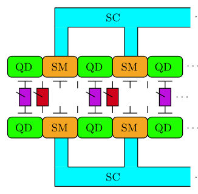
<figcaption class="paper-figure-caption"><b>Fig 1.</b> FIG. 1. Experimental setup to realize the Ashkin–Teller model using two Kitaev chains coupled to resonators (pur- ple and red represent x and z modulation respectively). The Kitaev chain is formed by an alternating array of quantum dots (QDs) and proximitized semiconductor segments host- ing Andreev bound states (SM+SC).</figcaption>
</figure>
<figure class="paper-figure-card">
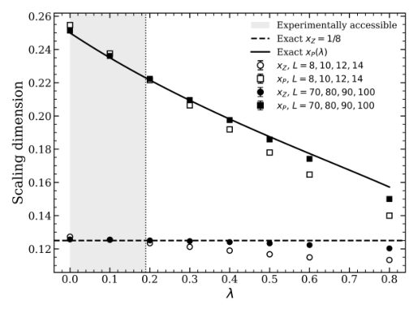
<figcaption class="paper-figure-caption"><b>Fig 2.</b> FIG. 2. The magnetic and polarization scaling dimensions, xm and xP , along the Ashkin–Teller critical line, obtained using finite-size scaling. Symbols show the scaling dimen- sions extracted from DMRG calculations, while the solid and dashed lines denote the corresponding exact critical-theory predictions. The shaded region indicates the experimentally accessible range 0 ≤λ ≤0.19. The fit data underlying this figure are provided in Appendix B.</figcaption>
</figure>
<figure class="paper-figure-card">
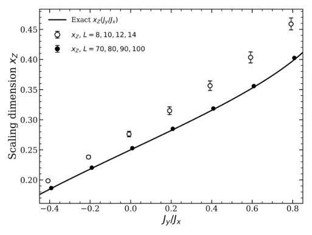
<figcaption class="paper-figure-caption"><b>Fig 3.</b> FIG. 3. The magnetic scaling dimension xm along the eight- vertex critical line obtained using finite-size scaling. Symbols show the scaling dimensions extracted from DMRG calcula- tions, while the solid line denotes the exact eight-vertex pre- diction. The fit data underlying this figure are provided in Appendix B.</figcaption>
</figure>
<figure class="paper-figure-card">

<figcaption class="paper-figure-caption"><b>Fig 4.</b> Figure 3 compares the magnetic scaling dimension xZ extracted from finite-size DMRG calculations with the exact eight-vertex prediction as a function of Jy/Jx. Along the eight-vertex critical line, the exact magnetic</figcaption>
</figure>
<figure class="paper-figure-card">
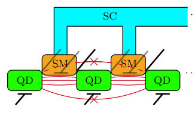
<figcaption class="paper-figure-caption"><b>Fig 5.</b> FIG. 4. Experimental setup for realizing the eight-vertex model through Coulomb interactions between neighboring quantum dots. Longer-range Coulomb interactions (red lines) are screened (red crosses) by the metallic leads (black), effec- tively restricting the interaction to nearest neighbors. The Kitaev chain is formed by an alternating array of quantum dots (QDs) and proximitized semiconductor segments host- ing Andreev bound states (SM+SC).</figcaption>
</figure>
</div>

<p><strong>Summary.</strong> This paper proposes using quantum-dot arrays to engineer and study weak universality in quantum critical systems, specifically the Ashkin-Teller and eight-vertex models. By utilizing both resonator-mediated and direct Coulomb interactions, the authors demonstrate microscopic control over parameters that govern critical exponents. The work is significant because it provides a tangible, controllable platform to test fundamental theories of phase transitions in condensed matter physics.</p>
<p><strong>Why it may be interesting.</strong> This work bridges fundamental concepts from statistical mechanics (critical phenomena) with cutting-edge solid-state quantum simulation platforms (quantum dots), offering a concrete roadmap for experimental realization of complex quantum critical points.</p>
<details>
<summary>Detailed structure</summary>
<p><strong>Main problem.</strong> The primary challenge is experimentally realizing and controlling weak universality, where critical exponents vary continuously along a critical line, in quantum many-body systems.</p>
<p><strong>Main result.</strong> The authors propose quantum-dot architectures to microscopically engineer and tune the parameters governing critical exponents in the Ashkin-Teller and eight-vertex models.</p>
<p><strong>Method.</strong> The study combines theoretical mapping (e.g., Majorana fermions, Jordan-Wigner transformation) with numerical simulations (DMRG) and proposes experimental realizations using resonator-mediated and direct Coulomb interactions in quantum dots.</p>
<p><strong>Model / system.</strong> The models studied are the quantum Ashkin-Teller (AT) and XYZ/eight-vertex models. The physical platform is based on quantum-dot Kitaev-chain architectures, allowing for tunable interactions via resonator coupling or direct Coulomb interaction.</p>
<p><strong>Key observables.</strong> Continuously varying critical exponents ($eta, 
u$), magnetic scaling dimension ($x_Z$), and local charge density (order parameter).</p>
<p><strong>Important parameters / regimes.</strong> Tuning ratios like $\lambda/t$ for the AT model, and interaction ratios like $J_y/J_x$ for the eight-vertex model. The anti-adiabatic regime ($\omega \gg E_{	ext{Kitaev}}$) is a key theoretical limit.</p>
<p><strong>Assumptions / limitations.</strong> The derivation of the effective Hamiltonian relies on the anti-adiabatic limit, and the analysis assumes that the accessible interaction range yields measurable changes in critical exponents above experimental noise.</p>
<p><strong>Figures summary.</strong> Figure 3 compares DMRG-extracted magnetic scaling dimensions ($x_m$) against the exact theoretical prediction along the eight-vertex critical line. Figure 4 illustrates the experimental setup using Coulomb interactions for the eight-vertex model.</p>
<p><strong>Paper structure.</strong> The paper first establishes the theoretical framework by mapping spin models (AT, XYZ) to fermionic/Majorana representations. It then details the physical realization using quantum dots, distinguishing between resonator-mediated coupling (for AT) and direct Coulomb coupling (for eight-vertex). Finally, it presents results using finite-size scaling analysis on both theoretical and simulated data.</p>
</details>
<details>
<summary>Abstract</summary>
<p>Quantum critical theories with continuously varying critical exponents remain challenging to access experimentally. Here, we propose quantum-dot architectures for realizing the quantum Ashkin-Teller and XYZ/eight-vertex models using resonator-mediated and direct Coulomb interactions, respectively. We focus on the Ashkin-Teller and eight-vertex critical lines, which are connected by a non-local duality relating local order parameters to topological string operators. The resulting platforms provide microscopic control over the parameters explicitly controlling critical exponents, with the Coulomb-based implementation enabling stronger interaction regimes. We demonstrate that continuously varying critical behavior can already be resolved in short chains. For experimentally realistic parameters, the accessible interaction range is expected to produce changes in the critical exponents of order $10\%$ for the Ashkin-Teller model and substantially larger changes for the eight-vertex model. In both cases, the predicted variations lie well above the estimated measurement uncertainties.</p>
</details>
<p><sub><a href="#top">↑ back to top</a></sub></p>

<p><a id="paper-2609.19432"></a></p>
<h3 id="how-universal-are-warm-turbulent-cascades"><a href="http://arxiv.org/abs/2609.19432v1">How universal are warm turbulent cascades?</a></h3>
<p><strong>Authors:</strong> Ben Y. Israeli, Gregory Falkovich<br>
<strong>Type:</strong> theory · <strong>Category:</strong> statistical mechanics · <strong>PDF:</strong> <a href="https://arxiv.org/pdf/2609.19432v1">https://arxiv.org/pdf/2609.19432v1</a><br>
<strong>Analysis basis:</strong> full PDF text, analyzed in chunks
<strong>Topic relevance:</strong> 🔥 <code>non-equilibrium universality</code> <strong>4/5</strong> · <code>Keldysh / 2PI / non-Gaussian methods</code> <strong>1/5</strong> · <code>correlated / nonlocal dissipation</code> <strong>1/5</strong> · <code>driven-dissipative phase transition</code> <strong>1/5</strong></p>
<div class="figure-strip-hint">↔ Scroll figures horizontally</div>
<div class="paper-figures-scroll">
<figure class="paper-figure-card">
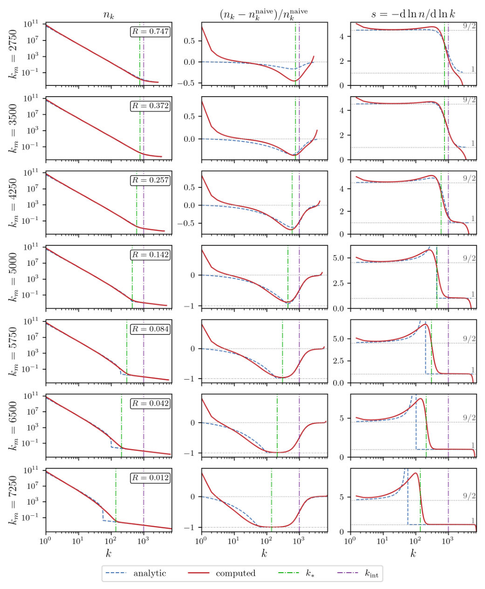
<figcaption class="paper-figure-caption"><b>Fig 1.</b> FIG. 1. Spectrum nk, difference of the spectrum from a naive sum nnaive k = λP 1/2 0 k−9/2 + T/ck, and local exponent (eq. (72)) for the stationary numerical solutions at evenly spaced km. The sum of the depleted cascade and a thermal distribution nk = λP(k)1/2k−9/2 + T/ck (using eq. (59)) are shown for reference. The thermostat contamination parameter R (eq. (71)) is indicated in the left column.</figcaption>
</figure>
<figure class="paper-figure-card">
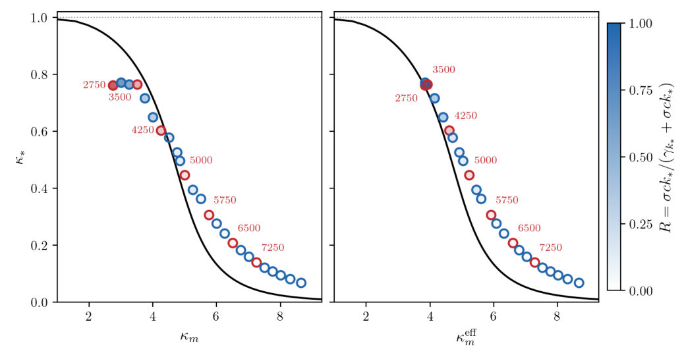
<figcaption class="paper-figure-caption"><b>Fig 2.</b> FIG. 2. Normalized transition wavenumber as a function of uncompensated (left) and compensated (right) normalized maximum wavenumber. Opacity is used to indicate thermostat contamination parameter R. Red markers indicate the runs shown in figure fig. 1 with indicated km. The curves defined by eqs. (65) and (69) are shown in black.</figcaption>
</figure>
</div>

<p><strong>Summary.</strong> This work investigates the universality of energy cascades in wave turbulence, showing that thermal damping introduces nonlocal effects dependent on the system's high-wavenumber cutoff. By analyzing the wave kinetic equation for three- and four-wave interactions, the authors demonstrate that the cascade behavior is not universal, contradicting common theoretical assumptions.</p>
<p><strong>Why it may be interesting.</strong> The core concept of non-equilibrium statistical mechanics, particularly how boundary conditions (like the UV cutoff) can invalidate simple, universal scaling laws derived from local approximations, is highly relevant to open quantum systems and non-equilibrium dynamics.</p>
<details>
<summary>Detailed structure</summary>
<p><strong>Main problem.</strong> The paper questions the universality of 'warm cascade' solutions in wave turbulence, which are typically assumed to depend only on conserved fluxes and temperature.</p>
<p><strong>Main result.</strong> Nonlocal effects arising from thermal damping introduce a dependence on the UV cutoff (maximum wavenumber), challenging the assumption that these cascades are universal.</p>
<p><strong>Method.</strong> The authors use asymptotic analysis of the wave kinetic equation for both three-wave and four-wave interactions, supplemented by numerical simulations of the energy depletion.</p>
<p><strong>Model / system.</strong> The study concerns wave systems exhibiting turbulent cascades, governed by the wave kinetic equation, and considering interactions via both three-wave and four-wave processes.</p>
<p><strong>Key observables.</strong> Cascade spectrum exponent s(k), energy flux P(k), transition wavenumber k*, and the ratio of damping to cascade rates.</p>
<p><strong>Important parameters / regimes.</strong> The UV cutoff (maximum wavenumber, k_max), and the coupling constants governing the wave interactions.</p>
<p><strong>Assumptions / limitations.</strong> The analysis initially assumes local interactions, but the conclusion demonstrates that the full collision integral is nonlocal, invalidating this approximation.</p>
<p><strong>Figures summary.</strong> Figure 1 shows the spectrum n_k and the local exponent for various k_m, while Figure 2 compares the numerically determined transition wavenumber vs. analytic models.</p>
<p><strong>Paper structure.</strong> The paper progresses from establishing the standard warm cascade model to analyzing the impact of thermal damping via the wave kinetic equation. It then presents analytical derivations for the depleted cascade and concludes with numerical demonstrations showing the non-universal dependence on the cutoff scale.</p>
</details>
<details>
<summary>Abstract</summary>
<p>It is often assumed that general stationary solutions to the wave kinetic equation are described solely by conserved fluxes and temperature. The families of solutions parameterized by these quantities are referred to as warm cascades, and are derivable from differential models of wave kinetics. These models rely on the assumption of local interactions, and we demonstrate by a time scale argument that the nonlocal effect of thermal damping on the cascade may result in dependence on an additional parameter, the UV cutoff, calling into question the validity of warm cascade solutions. This is shown for systems with both three-wave and four-wave interactions. We then consider the depletion of the cascade by this damping, and present a numerical demonstration of this nonlocal and nonuniversal behavior.</p>
</details>
<p><sub><a href="#top">↑ back to top</a></sub></p>

<p><a id="paper-2609.20137"></a></p>
<h3 id="electrostatic-stabilization-of-near-surface-quantum-sensors-via-dielectric-interface-engineering"><a href="http://arxiv.org/abs/2609.20137v1">Electrostatic Stabilization of Near-Surface Quantum Sensors via Dielectric Interface Engineering</a></h3>
<p><strong>Authors:</strong> Atharva Paranjape, Kathrin Küster, Olga Shevstova, Lisa Ebo, Toni Hache, Klaus Kern, Rainer Stöhr, Jörg Wrachtrup, Aparajita Singha<br>
<strong>Type:</strong> experiment · <strong>Category:</strong> quantum information and computing · <strong>PDF:</strong> <a href="https://arxiv.org/pdf/2609.20137v1">https://arxiv.org/pdf/2609.20137v1</a><br>
<strong>Analysis basis:</strong> full PDF text, analyzed in chunks
<strong>Topic relevance:</strong> 🔥 <code>QC/QI experiment</code> <strong>4/5</strong> · <code>quantum measurements</code> <strong>1/5</strong> · <code>quantum optics experiment</code> <strong>1/5</strong></p>
<div class="figure-strip-hint">↔ Scroll figures horizontally</div>
<div class="paper-figures-scroll">
<figure class="paper-figure-card">
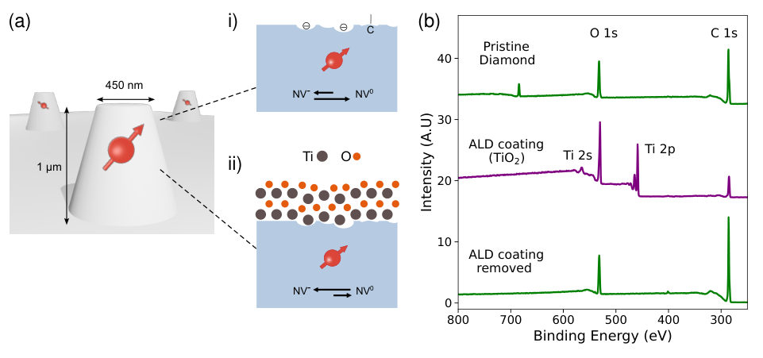
<figcaption class="paper-figure-caption"><b>Fig 1.</b> Figure 1: Schematic of dielectric coated diamond and surface characterization (a) Electronic environment of NV centers in nano-structured diamond depicted under i) pristine and ii) TiO2 coated conditions. The length of black arrows represents the relative strength of charge-state switching. b) X-ray Photoelectron Spectroscopy of a reference sample (RS) under different surface conditions. Ti signal is observed upon ALD deposition (coating performed using 500 cycles of ALD). These signatures are removed after cleaning the diamond surface. A residual peak at the top panel at 684.8 eV corresponds to F 1s.</figcaption>
</figure>
<figure class="paper-figure-card">
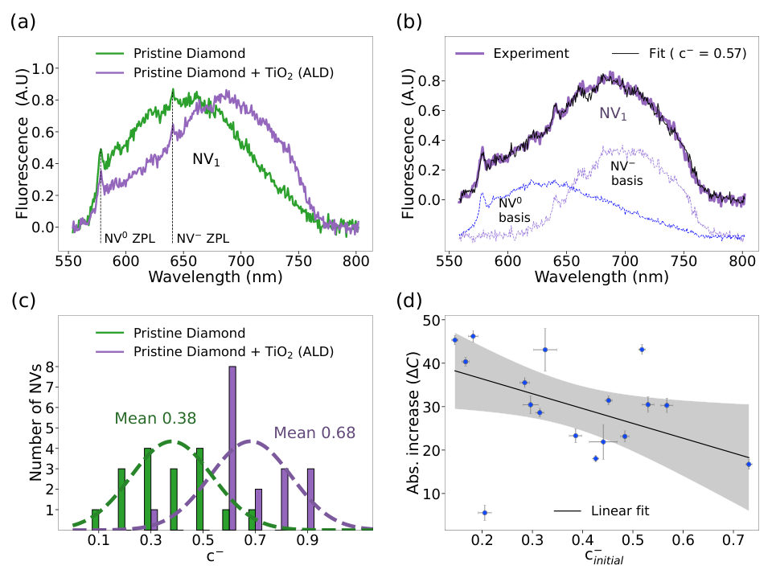
<figcaption class="paper-figure-caption"><b>Fig 2.</b> Figure 2: Fluorescence spectrum of individual NV centers in near-UHV condi- tion (a) Measured fluorescence spectrum of the same single NV center (NV1) under pristine and coated conditions. Plotted spectra are area-normalized. P= 3 x 10-9 mbar, T= 300 K, incident laser power before the objective = 130 µW. (b) Decomposition of measured spec- trum using pure NV- and NV0 spectra as basis functions to obtain NV- percentage. The least squares fit (black) is in excellent agreement with the experimentally obtained spectrum (purple) and we obtain c−=0.57. (c) Statistical representation of NV- fluorescence contri- bution from 17 measured NV centers. Dashed lines represent fits to a normal...</figcaption>
</figure>
<figure class="paper-figure-card">
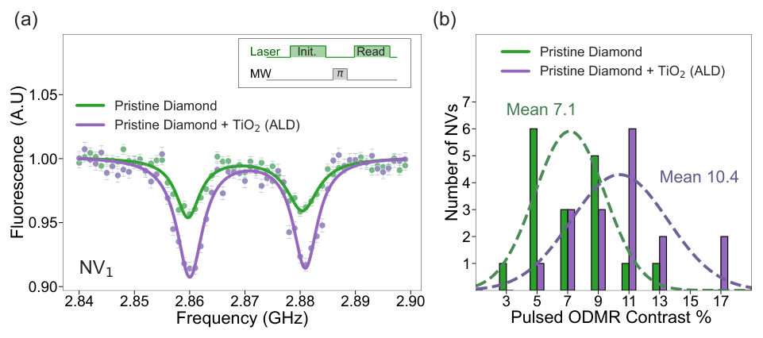
<figcaption class="paper-figure-caption"><b>Fig 3.</b> Figure 3: Pulsed ODMR spectroscopy of single NV centers in near-UHV condition (a) Inset: laser and microwave (MW) pulse sequence. Pulsed ODMR measurement of NV1 (same NV as in Figure 2) before and after the coating. P= 3 x 10-9 mbar, T= 300 K, incident laser power before the objective = 130 µW (b) Statistics of the ODMR contrast in pristine and ALD coated conditions for 17 measured NV centers. Dashed lines represent fits to a normal distribution. Bins are divided equally between green and purple only for visual clarity.</figcaption>
</figure>
<figure class="paper-figure-card">
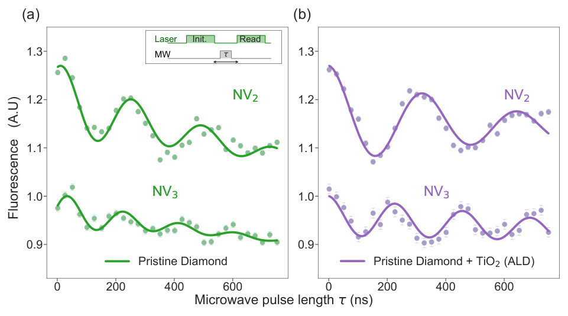
<figcaption class="paper-figure-caption"><b>Fig 4.</b> Figure 4: Improvement of Rabi oscillations of single NV centers in near-UHV condition (a) Inset: laser and microwave (MW) pulse sequence. Driven Rabi oscillations for NV2 and NV3 in pristine diamond (b) Measurements for NV2 and NV3 with TiO2 coated diamond. We observe a gradual decrease in the baseline for NV centers in pristine diamond which recovers after ALD coating. P= 3 x 10-9 mbar, T= 300 K, incident laser power before the objective = 130 µW.</figcaption>
</figure>
<figure class="paper-figure-card">
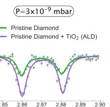
<figcaption class="paper-figure-caption"><b>Fig 5.</b> Figure 5: For Table of Contents Only</figcaption>
</figure>
</div>

<p><strong>Summary.</strong> This paper demonstrates a method to stabilize charge states in shallow NV centers within diamond by coating the surface with a dielectric TiO2 layer. By suppressing surface-induced electric fields, the coating significantly boosts the concentration of the desired NV- charge state and enhances the sensor's magnetic resonance contrast. This establishes dielectric engineering as a powerful tool for robust quantum sensing under extreme vacuum conditions.</p>
<p><strong>Why it may be interesting.</strong> This work provides an experimental blueprint for mitigating environmental decoherence sources (surface electric fields) in solid-state quantum memories, which is highly relevant for building robust quantum sensors and quantum computing platforms.</p>
<details>
<summary>Detailed structure</summary>
<p><strong>Main problem.</strong> Controlling the charge-state stability of near-surface quantum defects, like NV centers, is crucial for nanoscale sensing, especially in ultra-high vacuum where surface effects cause instability.</p>
<p><strong>Main result.</strong> Applying a TiO2 dielectric coating suppresses detrimental surface-induced electrostatic fields, leading to a significant increase in the stable NV- charge state and enhancing spin resonance contrast.</p>
<p><strong>Method.</strong> The researchers used Atomic Layer Deposition (ALD) to deposit a TiO2 coating on diamond, followed by fluorescence and optically detected magnetic resonance (ODMR) measurements under near-UHV conditions.</p>
<p><strong>Model / system.</strong> The system involves Nitrogen-Vacancy (NV) centers implanted shallowly (&lt; 10 nm) in diamond. The key physics revolves around the charge-state equilibrium between NV- and NV0, which dictates the sensor's performance.</p>
<p><strong>Key observables.</strong> NV- charge state fraction (quantified via fluorescence spectroscopy), ODMR spin resonance contrast, and spin coherence dynamics (Rabi oscillations).</p>
<p><strong>Important parameters / regimes.</strong> Near-UHV pressure ($3 	imes 10^{-9}$ mbar), room temperature (300 K), and the dielectric coating material (TiO2).</p>
<p><strong>Assumptions / limitations.</strong> The measured charge-state fraction (c-) is used as a reliable proxy for the actual stable NV- population, and the coating process itself does not introduce significant bulk defects.</p>
<p><strong>Figures summary.</strong> Figures compare fluorescence spectra and ODMR measurements before and after TiO2 coating, showing quantitative improvements in charge-state stability and contrast. Rabi oscillation measurements confirm preserved coherent control.</p>
<p><strong>Paper structure.</strong> The paper establishes the problem (surface instability) and proposes the solution (dielectric engineering). It presents characterization (XPS, fluorescence) to quantify the improvement, followed by advanced measurements (ODMR, Rabi oscillations) to demonstrate enhanced sensing capability.</p>
</details>
<details>
<summary>Abstract</summary>
<p>Control of charge-state stability in near-surface quantum defects is critical for nanoscale sensing, yet remains particularly challenging under ultra-high vacuum (UHV), where surface-induced band bending destabilizes the metrologically relevant charge-state. Here, we present a robust and reproducible approach for stabilizing shallowly implanted (&lt; 10 nm deep) nitrogen-vacancy (NV) centers in near-UHV conditions (P = $3 \times 10^{-9}$ mbar) based on dielectric interface engineering. Through measurements on individually addressable NV centers, we demonstrate that a TiO2 coating on the diamond suppresses surface-induced electrostatic fields, yielding a 79% increase n NV- population and a 45% enhancement in NV-spin resonance contrast at room temperature. Coherent control measurements further reveal suppressed charge-state conversion dynamics. These results establish dielectric screening as a powerful and reproducible strategy to engineer charge transition energetics of NV centers in scanning-probe-compatible geometries under extreme conditions.</p>
</details>
<p><sub><a href="#top">↑ back to top</a></sub></p>

<p><a id="paper-2609.20775"></a></p>
<h3 id="coherent-and-ultra-low-power-edsr-with-a-flopping-mode-spin-qubit-in-germanium"><a href="http://arxiv.org/abs/2609.20775v1">Coherent and ultra-low-power EDSR with a flopping-mode spin qubit in germanium</a></h3>
<p><strong>Authors:</strong> Alexei Orekhov, Wonjin Jang, Pan Zhang, Konstantinos Tsoukalas, Fabian Oppliger, Franco De Palma, Elena Acinapura, Younghun Ryu, Inga Seidler, Lisa Sommer, Leonardo Massai, Felix J. Schupp, Matthias Mergenthaler, Stefano Bosco, Patrick Harvey-Collard, Pasquale Scarlino<br>
<strong>Type:</strong> experiment · <strong>Category:</strong> quantum information and computing · <strong>PDF:</strong> <a href="https://arxiv.org/pdf/2609.20775v1">https://arxiv.org/pdf/2609.20775v1</a><br>
<strong>Analysis basis:</strong> full PDF text, analyzed in chunks
<strong>Topic relevance:</strong> 🔥 <code>QC/QI experiment</code> <strong>4/5</strong> · <code>quantum measurements</code> <strong>1/5</strong></p>
<div class="figure-strip-hint">↔ Scroll figures horizontally</div>
<div class="paper-figures-scroll">
<figure class="paper-figure-card">
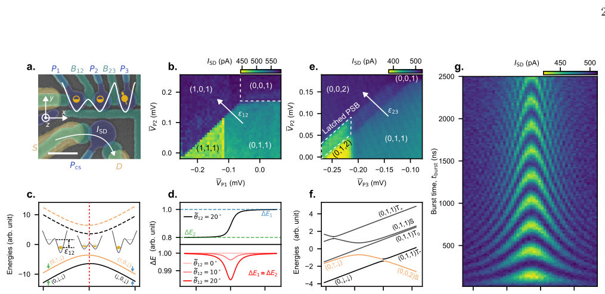
<figcaption class="paper-figure-caption"><b>Fig 1.</b> FIG. 1. a. False colored scanning electron micrograph of a QD device identical to the one utilized in this work. Plungers Pi are used to tune the chemical potential of QDi, and barriers Bij are used to control tunnel coupling between QDi and QDj. S and D indicate the source and drain ohmic contacts of the SHT charge sensor. The dc current ISD through these contacts is used to charge-sense the triple QD. b. Pulsed DQD charge stability diagram measured as a function of the virtualized gate voltages V P1 and V P2, near (1,0,1)-(0,1,1) charge transition. The DQD energy detuning ε12 is tuned along the direction illustrated by the white arrow. c. Eigenenergies as a function of energy detuning ε12...</figcaption>
</figure>
<figure class="paper-figure-card">
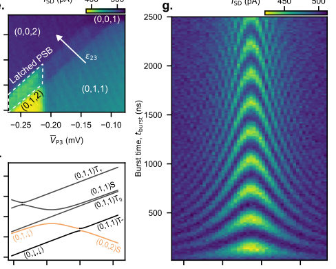
<figcaption class="paper-figure-caption"><b>Fig 2.</b> Fig. 1a displays a false-colored scanning electron mi- crograph of a device identical to the one used in this work, defined on a planar Ge/SiGe heterostructure grown by reverse-grading on a Si substrate [38]. Holes are ac- cumulated in a 20 nm strained Ge quantum well residing 47 nm below the surface and contacted with annealed Pt- GeSi ohmic contacts [39]. We make use of two gate lay- ers, with barriers and screening gates in the first layer, and plungers in the second layer. The three uppermost plunger gates Pi, with i = 1, 2, 3 are primarily used to de- fine a triple-QD, while the barriers B12 and B23 are used</figcaption>
</figure>
<figure class="paper-figure-card">
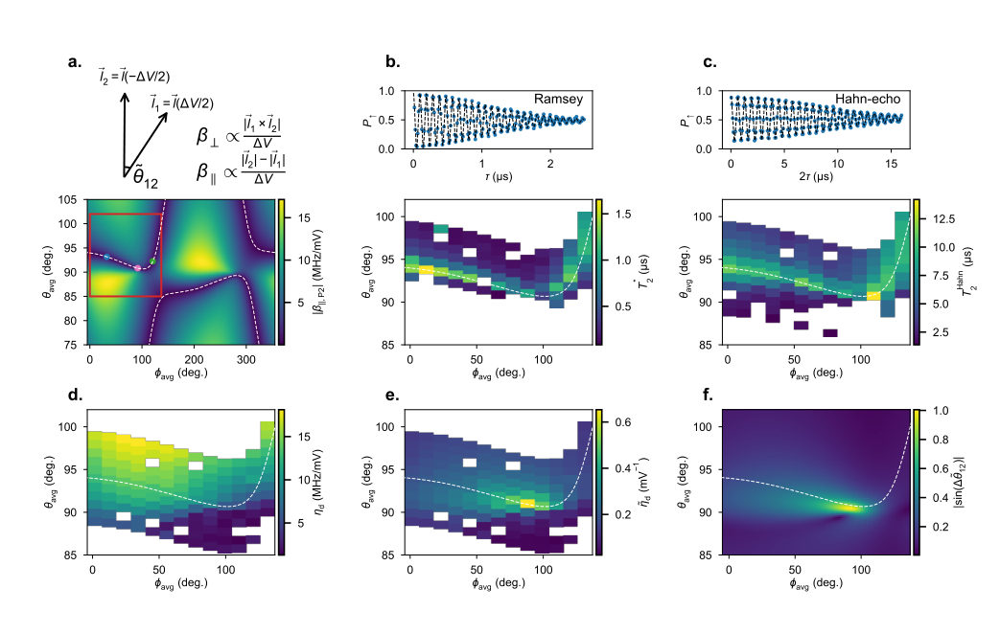
<figcaption class="paper-figure-caption"><b>Fig 3.</b> FIG. 2. a. Top panel: Schematic showing the definition of longitudinal (β|| ) and transverse (β⊥) spin-electric susceptibility (LSES and TSES), with FM qubit Larmor vector l evaluated at two (incrementally small) voltage detunings of ∆V = ∆V Pi from the charge symmetry point. Bottom panel: Absolute value of the LSES, |β||,P2|, with respect to V P2. Blue, pink and green dots define the field directions, ˆb1, ˆb2 and ˆb3 respectively, corresponding to experimentally measured zero-detuning sweet-spots. b. Top panel: Example Ramsey decay measurement at B orientation ˆb1, yielding T ∗ 2 = 1.4 µs. Bottom panel: T ∗ 2 measured as a function of B, with spherical angles defined in the average...</figcaption>
</figure>
<figure class="paper-figure-card">
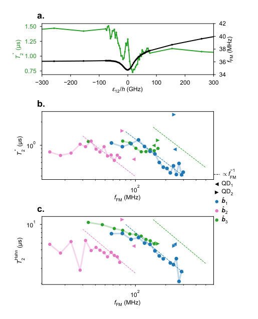
<figcaption class="paper-figure-caption"><b>Fig 4.</b> FIG. 3. a. FM qubit frequency fFM (black) and T ∗ 2 (green) as a function of ε12, extracted from the same Ramsey mea- surement, with |B| = 5 mT and tc/h = 13 GHz. b. (c.) T ∗ 2 (T Hahn 2 ) as a function of fFM for the B orientations ˆb1 (blue), ˆb2 (pink), and ˆb3 (green), and tc/h = 13 GHz. Each dashed line is proportional to 1/fFM with prefactors related by the extracted second derivatives of the qubit spectra (see text). The LD qubit coherence times in QD1(2) are measured at the center of (1,0,1) and (0,1,1) represented with left (right) pointing triangles.</figcaption>
</figure>
<figure class="paper-figure-card">
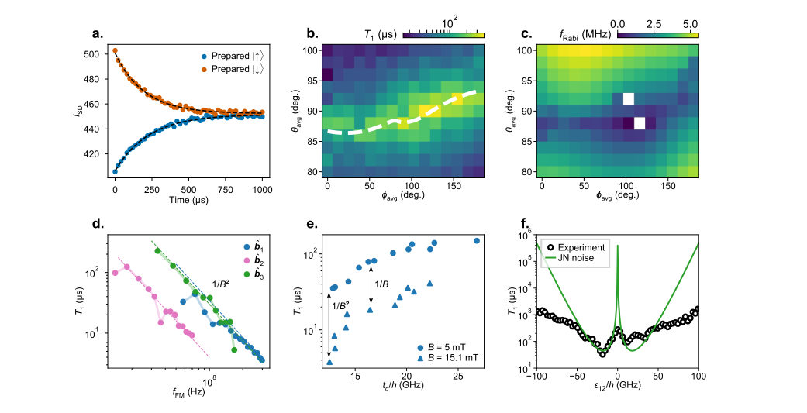
<figcaption class="paper-figure-caption"><b>Fig 5.</b> FIG. 4. a. Spin relaxation for B direction ˆb3, |B| = 5 mT, tc/h = 13 GHz. Measured for spin-up and spin-down initializations. b. T1 dependence on B direction for spin-down initialization. Dashed line shows analytical T1 sweet-spot (see Supplemen- tary section S17 2). c. Rabi frequency dependence on B direction with Ad,P2 = 600 µV. d. T1 as a function of qubit frequency at zero detuning, measured for directions ˆb1,2,3. Dashed lines are obtained as T1 = ˜η−2 d kfFM −2, where k is a fixed constant for all three B directions. e. Scaling of T1 with tunnel coupling tc for ˆb1 and two different magnetic field magnitudes |B| = 5 mT and 15.1 mT. At tc/h = 13 GHz the B scaling of T1 follows 1/|B|2,...</figcaption>
</figure>
</div>

<p><strong>Summary.</strong> This paper presents a breakthrough in solid-state quantum computing by demonstrating a flopping-mode spin qubit in germanium that enables high-fidelity single-qubit gates using ultra-low radiofrequency drive power. By engineering the qubit to operate at a charge-noise sweet-spot, the researchers overcome the power limitations of conventional spin resonance techniques. This advancement paves the way for more scalable and practical hole-spin-based quantum processors.</p>
<p><strong>Why it may be interesting.</strong> This work directly addresses the scalability bottleneck in solid-state quantum computing by demonstrating a robust, low-power control mechanism for spin qubits, which is highly relevant to quantum information processing.</p>
<details>
<summary>Detailed structure</summary>
<p><strong>Main problem.</strong> Conventional Electric Dipole Spin Resonance (EDSR) for hole spin qubits in Ge requires high rf drive power at low magnetic fields, causing heating and crosstalk detrimental to scalable quantum architectures.</p>
<p><strong>Main result.</strong> The proposed flopping-mode (FM) qubit architecture achieves ultra-low-power, high-fidelity single-qubit operations at low magnetic fields, maintaining high coherence times ($T_{\phi,	ext{CPMG}32} = 130 \mu	ext{s}$) and gate fidelity ($\ge 99.76\%$).</p>
<p><strong>Method.</strong> The study involves characterizing coherence sweet-spots by mapping out spin-electric susceptibilities and measuring qubit performance using Rabi chevron patterns.</p>
<p><strong>Model / system.</strong> The system utilizes hole spin qubits in a double quantum dot (DQD) structure within planar Ge/SiGe heterostructures, encoding the qubit in a flopping-mode (FM) that offers first-order protection against charge noise.</p>
<p><strong>Key observables.</strong> Coherence times ($T^*_2, T_{	ext{Hahn}}, T_{\phi,	ext{CPMG}32}, T_1$), single-qubit gate fidelity, and required drive power (achieved at $-52 	ext{ dBm}$).</p>
<p><strong>Important parameters / regimes.</strong> Nearly in-plane magnetic field of $5 	ext{ mT}$; gate time $t_{X\pi} = 88 	ext{ ns}$.</p>
<p><strong>Assumptions / limitations.</strong> The analysis assumes the FM qubit operation point ($\varepsilon_{12}=0$) is a sweet-spot that simultaneously suppresses charge noise and allows for efficient electrical driving.</p>
<p><strong>Figures summary.</strong> Figures illustrate the device structure, charge stability diagrams, energy level splittings for the FM qubit, and Rabi chevron patterns confirming qubit operation at sweet-spots.</p>
<p><strong>Paper structure.</strong> The paper progresses from identifying the power limitations of conventional EDSR to proposing and demonstrating the FM qubit mechanism. It details the coherence measurements, analyzes the low-power operation regime, and concludes by confirming the benefits for scalable architectures.</p>
</details>
<details>
<summary>Abstract</summary>
<p>Hole spin qubits in semiconductor quantum dots (QDs) enable high-fidelity all-electric control, but conventional electric dipole spin resonance (EDSR) can require substantial rf drive power at the low magnetic fields that are favorable for qubit coherence and readout. In planar Ge hole spin qubits, this can reach -27 dBm at the device, posing challenges for scalable architectures due to heating and crosstalk. Here, we demonstrate a flopping-mode (FM) qubit in Ge, where a single spin is delocalized in a double QD, combining first-order protection against charge noise with exceptionally efficient electric driving. By mapping out coherence sweet-spots as a function of magnetic field orientation we achieve $T_2^*= 1.4μ\mathrm{s}$, $T_2^{\mathrm{Hahn}}= 11.5 μ\mathrm{s}$, $T^{φ, \mathrm{CPMG32}}_2= 130 μ\mathrm{s}$, and $T_1= 226 μ\mathrm{s}$, and a single-qubit gate fidelity of up to 99.76$\%$ for a gate time $t_{Xπ} = 88$ ns. Importantly, these results are obtained at a nearly in-plane magnetic field of 5 mT using only -52 dBm drive power at the device. We further find that qubit relaxation in this regime is consistent with a two-photon Orbach process, providing a route for further optimization. Our results demonstrate that FM-EDSR supports ultra-low-power, high-fidelity single-qubit operations, improvements that could benefit scalable hole-spin-based architectures and hybrid spin-photon interfaces.</p>
</details>
<p><sub><a href="#top">↑ back to top</a></sub></p>

<p><a id="paper-2609.20043"></a></p>
<h3 id="highly-uniform-first-electron-position-in-qubit-arrays-fabricated-on-dedicated-qsoir-300mm-commercial-platform"><a href="http://arxiv.org/abs/2609.20043v1">Highly uniform first-electron position in qubit arrays fabricated on dedicated QSOI(R) 300mm commercial platform</a></h3>
<p><strong>Authors:</strong> Johan Pelloux-Prayer, Elise Prin, Giselle A. Elbaz, Pierre-Louis Julliard, Amaryllis Comiti, Clément Nguyen, Sylvain Martin, Patrick Torresani, Renan Lethiecq, Carlos Augusto Suarez Segovia, Franck Arnaud, Etienne Nowak, Tristan Meunier, Bruna Cardoso Paz<br>
<strong>Type:</strong> experiment · <strong>Category:</strong> quantum information and computing · <strong>PDF:</strong> <a href="https://arxiv.org/pdf/2609.20043v1">https://arxiv.org/pdf/2609.20043v1</a><br>
<strong>Analysis basis:</strong> full PDF text, analyzed in chunks
<strong>Topic relevance:</strong> 🔥 <code>QC/QI experiment</code> <strong>4/5</strong> · <code>quantum measurements</code> <strong>1/5</strong></p>
<div class="figure-strip-hint">↔ Scroll figures horizontally</div>
<div class="paper-figures-scroll">
<figure class="paper-figure-card">
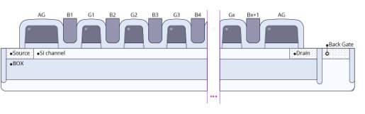
<figcaption class="paper-figure-caption"><b>Fig 1.</b> Fig. 1. Schematic of an array of quantum dots using QSOI®. Access gates (AG) are used to form electrostatic reservoirs. Plungers gates (G1, G2,..., Gx) are used to control the chemical potential of the quantum dots. Barriers (B1, B2, ..., Bx+1) are repurposed vias used to control the tunnel coupling between two neighboring quantum dots. This is an artist impression and does not reflect the real dimensions of our devices.</figcaption>
</figure>
<figure class="paper-figure-card">
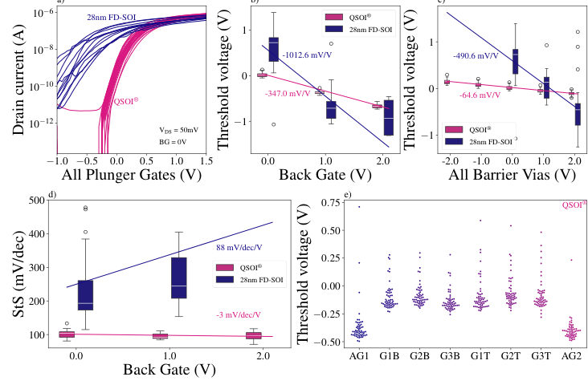
<figcaption class="paper-figure-caption"><b>Fig 2.</b> Fig. 2. Data are colored in blue for 28nm FD-SOI and in pink for QSOI® in a, b, c, and d. a) Wafer-level Id-Vg across the center, mid and edge radii (28 dies). b) - c) Boxplot of the threshold voltage for 28nm FD-SOI and QSOI® against the applied back-gate voltage in (b) and the barrier-vias voltage in (c). Box plots show the interquartile range and the median. Whiskers represent the maximum and minimum values without outliers. Outliers are defined as data points that are more than 1.5 interquartile range away from the median. d) Boxplot of the subthreshold swing (StS) extracted from Id-Vg curve for 3 back gate biases: 0V, 1V, and 2V. For a back gate of 2V the 28nm FD-SOI data is shifted to...</figcaption>
</figure>
<figure class="paper-figure-card">
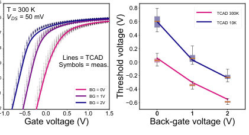
<figcaption class="paper-figure-caption"><b>Fig 3.</b> Fig. 3. Simulation and experimental data obtained for a linear array with 3 plunger gates in series. Left: transfer characteristics at room temperature for different back-gate bias VBG = 0, 1, and 2V, and VDS = 50mV. Right: Extracted threshold voltage as a function of the back-gate voltage at room and low temperatures.</figcaption>
</figure>
<figure class="paper-figure-card">
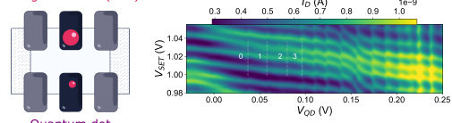
<figcaption class="paper-figure-caption"><b>Fig 4.</b> Fig. 4. Left: Schematics of a charge detection configuration on a bilinear device, where a single-electron transistor is used to sense the electrons tunneling inside the quantum dot. Right: Stability diagram showing the few- electron regime for the probed quantum dot formed underneath the plunger gate. The numbers inside the figure indicate the charge occupation of the probed QD. The interruption of the regular pattern of vertical jumps indicates that the dot has been emptied. Access gates are not shown for simplicity.</figcaption>
</figure>
<figure class="paper-figure-card">
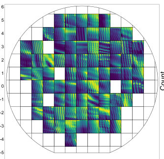
<figcaption class="paper-figure-caption"><b>Fig 5.</b> Fig. 5. Left: Wafermap of charge detection at the wafer scale for a pair of facing plunger gates. Only 4 dies were not measured since our protocol to find the first Coulomb peak rejected these dies. Each die shows the measurement between plunger gates G3T and G3B. Right: Histogram of the first electron position across the wafer measured for all the possible detectors in our device.</figcaption>
</figure>
</div>

<p><strong>Summary.</strong> This paper reports on the development of a Quantum Silicon-on-Insulator (QSOI(R)) platform, showing it is compatible with 300mm CMOS fabrication for quantum computing. By comparing it to older technologies, the authors demonstrate significant improvements in device uniformity and low variability in quantum dot charge detection. These results establish QSOI(R) as a promising, scalable foundation for integrated quantum devices.</p>
<p><strong>Why it may be interesting.</strong> The demonstration of high uniformity and low variability in charge detection parameters at the wafer scale is crucial for scaling up any solid-state quantum computing architecture, providing a tangible engineering milestone.</p>
<details>
<summary>Detailed structure</summary>
<p><strong>Main problem.</strong> The primary goal is to develop a scalable, highly uniform, and CMOS-compatible platform for fabricating qubit arrays.</p>
<p><strong>Main result.</strong> The QSOI(R) technology significantly improves device uniformity and reduces variability compared to standard FD-SOI, demonstrating reproducible quantum dot operation down to the few-electron regime on a wafer scale.</p>
<p><strong>Method.</strong> The research involves comparative electrical characterization of quantum devices fabricated using QSOI(R) versus 28nm FD-SOI, utilizing both room-temperature and cryogenic measurements.</p>
<p><strong>Model / system.</strong> The system is a quantum dot array fabricated on a Quantum Silicon-on-Insulator (QSOI(R)) platform, adapted from 28nm FD-SOI, designed for integrating silicon spin qubits.</p>
<p><strong>Key observables.</strong> First electron position dispersion ($\pm 35	ext{mV}$), threshold voltage ($ ext{V}<em ext_TH="ext{TH">{    ext{TH}}$) distribution ($\sigma   ext{V}</em>$).}}$), subthreshold swing (SS), and charge detection yield ($ ext{69\%</p>
<p><strong>Important parameters / regimes.</strong> Operating temperatures ($   ext{300K}$ and $    ext{sub-2K}$), device dimensions (28nm), and uniformity metrics.</p>
<p><strong>Assumptions / limitations.</strong> The electrostatics of the devices are assumed to behave as predicted by TCAD simulations, and the platform is assumed to be compatible with 300mm CMOS fabrication.</p>
<p><strong>Figures summary.</strong> Figures compare $  ext{V}_{    ext{TH}}$ dispersion (QSOI vs. FD-SOI), show tuning capabilities using back gates, and present wafer maps and histograms detailing the low dispersion of the first electron position.</p>
<p><strong>Paper structure.</strong> The paper progresses by first establishing the need for scalable platforms, then presenting comparative electrical measurements (room and cryogenic) showing superior uniformity and performance of QSOI(R) over existing technologies, and concluding with the demonstration of wafer-scale quantum dot functionality.</p>
</details>
<details>
<summary>Abstract</summary>
<p>We report progress toward the development of a quantum silicon-on-insulator (QSOI(R)) technology compatible with 300mm CMOS fabrication and adapted from the 28nm Fully-Depleted SOI (28nm FD-SOI) platform for scalable quantum computing. We compare quantum devices fabricated with standard 28nm FD-SOI and QSOI(R) technologies, and show striking improvements of room temperature electrostatic properties of the individual device. Moreover, the QSOI(R) technology has significantly reduced the device variability and the dispersion of device properties at the wafer level. Transistor metrics are reproduced by TCAD simulations showing that the electrostatics of the devices behave as expected for QSOI(R) technology. Wafer-scale measurements at sub-2K show reproducible quantum dots down to the few-electron regime with 69\% yield for successful charge detection of the first electron and a dispersion of the first electron position of $\mathrm{\pm 35 mV}$ over 377 quantum dots. These results establish QSOI(R) as a promising platform for CMOS-compatible quantum device co-integration.</p>
</details>
<p><sub><a href="#top">↑ back to top</a></sub></p>

<p><a id="paper-2609.20728"></a></p>
<h3 id="math141math-fold-unbiased-measurements-and-maximal-incompatibility"><a href="http://arxiv.org/abs/2609.20728v1">$k$-fold unbiased measurements and maximal incompatibility</a></h3>
<p><strong>Authors:</strong> Sébastien Designolle, Máté Farkas<br>
<strong>Type:</strong> theory · <strong>Category:</strong> quantum information and computing · <strong>PDF:</strong> <a href="https://arxiv.org/pdf/2609.20728v1">https://arxiv.org/pdf/2609.20728v1</a><br>
<strong>Analysis basis:</strong> full PDF text, analyzed in chunks
<strong>Topic relevance:</strong> 🔥 <code>quantum measurements</code> <strong>4/5</strong></p>
<div class="figure-strip-hint">↔ Scroll figures horizontally</div>
<div class="paper-figures-scroll">
<figure class="paper-figure-card">
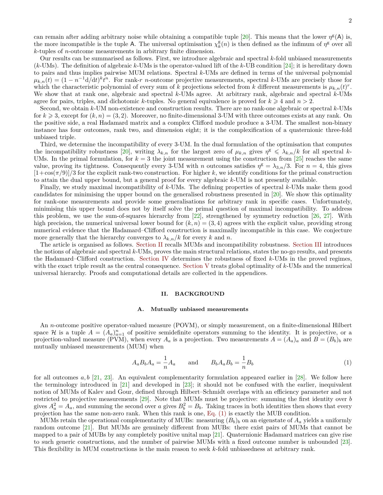
<figcaption class="paper-figure-caption"><b>Fig 1.</b> Low-resolution page preview, page 2</figcaption>
</figure>
<figure class="paper-figure-card">
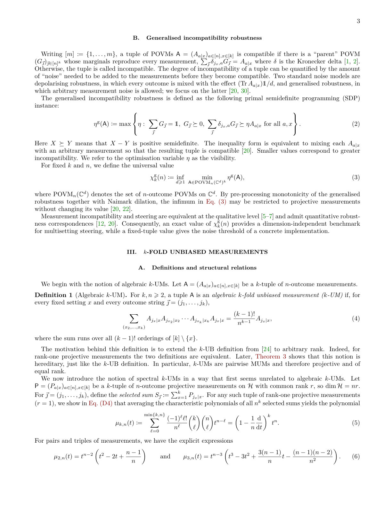
<figcaption class="paper-figure-caption"><b>Fig 2.</b> Low-resolution page preview, page 3</figcaption>
</figure>
<figure class="paper-figure-card">
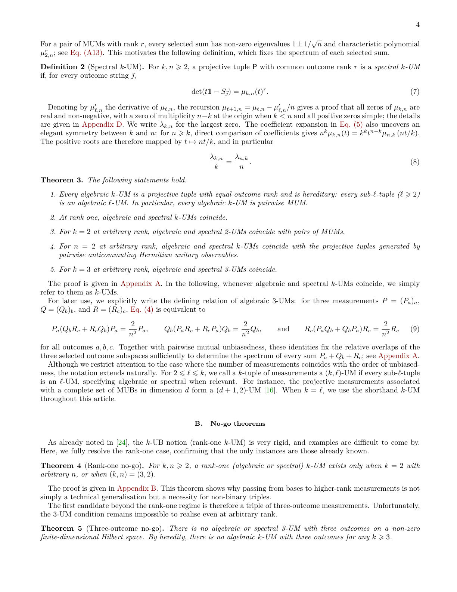
<figcaption class="paper-figure-caption"><b>Fig 3.</b> Low-resolution page preview, page 4</figcaption>
</figure>
<figure class="paper-figure-card">
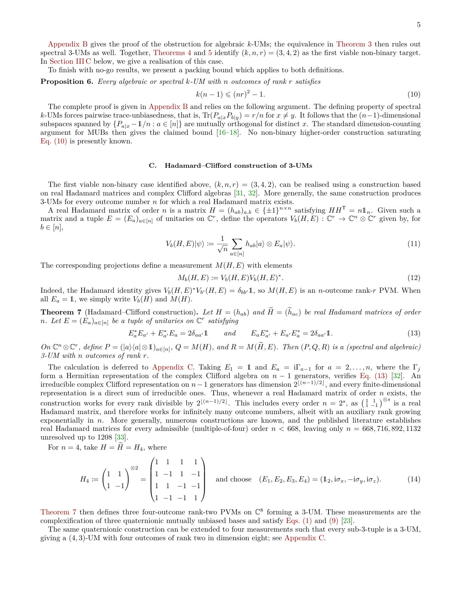
<figcaption class="paper-figure-caption"><b>Fig 4.</b> Low-resolution page preview, page 5</figcaption>
</figure>
<figure class="paper-figure-card">
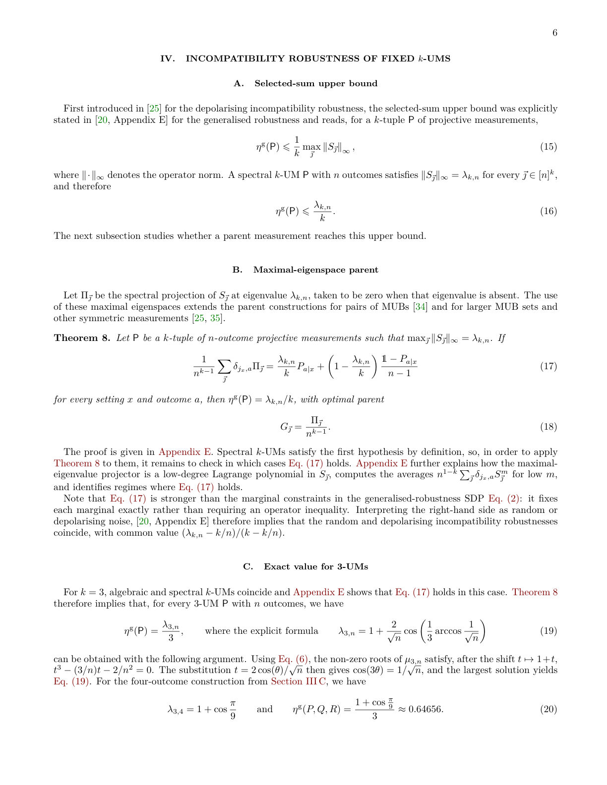
<figcaption class="paper-figure-caption"><b>Fig 5.</b> Low-resolution page preview, page 6</figcaption>
</figure>
</div>

<p><strong>Summary.</strong> This paper introduces $k$-fold unbiased measurements ($k$-UMs) to generalize the concept of MUBs to higher-order and higher-rank measurements. The authors develop mathematical tools, including generalized incompatibility robustness, to quantify how incompatible these measurements can be. The work establishes key existence theorems and provides deep structural insights into the limits of quantum measurement theory.</p>
<p><strong>Why it may be interesting.</strong> The rigorous mathematical framework developed for characterizing measurement incompatibility provides deep insights into the fundamental limits of quantum measurement theory, which underpins quantum information protocols.</p>
<details>
<summary>Detailed structure</summary>
<p><strong>Main problem.</strong> The paper extends the concept of mutually unbiased bases (MUBs) to higher-order, higher-rank measurements, studying $k$-fold unbiased measurements ($k$-UMs) and their connection to maximal measurement incompatibility.</p>
<p><strong>Main result.</strong> They establish strong no-go results for higher-order rank-one constructions and determine the exact generalized incompatibility robustness for 3-UMs, while also providing explicit constructions using Hadamard matrices.</p>
<p><strong>Method.</strong> The authors develop algebraic and spectral definitions for $k$-UMs, quantify incompatibility using generalized robustness ($\eta_g(A)$) via SDPs, and employ advanced techniques like sum-of-squares hierarchies and symmetry reduction.</p>
<p><strong>Model / system.</strong> The study focuses on Positive Operator-Valued Measures (POVMs) representing quantum measurements on a finite-dimensional Hilbert space, specifically analyzing tuples of measurements (3-UMs).</p>
<p><strong>Key observables.</strong> Generalized incompatibility robustness ($\eta_g(A)$), the universal lower bound $\chi_g^k(n)$, and the spectral parameter $\lambda_{k,n}$.</p>
<p><strong>Important parameters / regimes.</strong> The order of unbiasedness ($k$), the number of outcomes ($n$), and the rank of the measurements.</p>
<p><strong>Assumptions / limitations.</strong> The analysis relies on establishing structural relations between algebraic and spectral definitions, and uses SDP formulations to derive bounds on incompatibility.</p>
<p><strong>Figures summary.</strong> The notes mention Tables II and III, which summarize the sizes of the SDPs after symmetry reduction and compare computed incompatibility bounds ($\chi_g^{k,t}(n)$) against conjectured universal lower bounds ($\lambda_{k,n}/k$).</p>
<p><strong>Paper structure.</strong> The paper progresses by defining $k$-UMs, developing algebraic and spectral characterizations, proving structural equivalences and non-existence theorems, and finally applying these concepts to determine exact incompatibility values and analyze the convergence of related mathematical hierarchies.</p>
</details>
<details>
<summary>Abstract</summary>
<p>Mutually unbiased bases capture perfect complementarity between two quantum measurements. Extensions beyond pairwise unbiasedness have been proposed, but essentially no non-trivial higher-order constructions are known. We introduce $k$-fold unbiased measurements ($k$-UMs), extending the $k$-fold unbiased bases notion of [arXiv:1706.04446] from rank-one basis measurements to arbitrary-rank projective measurements, and show that this higher-rank setting supports a much richer theory. We develop the notions of algebraic and spectral $k$-UMs and prove that they coincide for rank-one measurements and triples of measurements (3-UMs). We establish strong no-go results for higher-order rank-one constructions and three-outcome 3-UMs, but obtain infinitely many higher-rank triples using Hadamard matrices and Clifford algebras. We then give these structures an exact operational interpretation in terms of measurement incompatibility. For 3-UMs with any number of outcomes, we determine their generalised incompatibility robustness exactly and construct an explicit joint measurement for their noisy versions at the compatibility threshold. Finally, we implement the symmetry reduction of the sum-of-squares hierarchy recently introduced in [New J. Phys. 28, 064509 (2026)] and give numerical evidence that the noise thresholds arising from the $k$-UM analysis may characterise the asymptotic behaviour of this hierarchy. In particular, with very high precision, we numerically show that our constructed four-outcome 3-UMs are among the most incompatible triples of four-outcome measurements.</p>
</details>
<p><sub><a href="#top">↑ back to top</a></sub></p>

<p><a id="paper-2609.19884"></a></p>
<h3 id="oddeven-or-half-entanglement-anomaly-in-the-bose-hubbard-model"><a href="http://arxiv.org/abs/2609.19884v1">Odd/Even or Half ? Entanglement Anomaly in the Bose-Hubbard model</a></h3>
<p><strong>Authors:</strong> Humberto E. López-Hernández, Santiago F. Caballero-Benitez<br>
<strong>Type:</strong> theory · <strong>Category:</strong> quantum gases · <strong>PDF:</strong> <a href="https://arxiv.org/pdf/2609.19884v1">https://arxiv.org/pdf/2609.19884v1</a><br>
<strong>Analysis basis:</strong> full PDF text, analyzed in chunks
<strong>Topic relevance:</strong> 🔥 <code>analog quantum simulation</code> <strong>4/5</strong></p>
<div class="figure-strip-hint">↔ Scroll figures horizontally</div>
<div class="paper-figures-scroll">
<figure class="paper-figure-card">
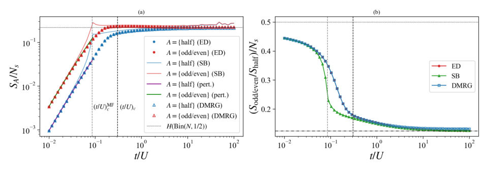
<figcaption class="paper-figure-caption"><b>Fig 1.</b> FIG. 2. Full range of t/U, Ns = 10. Left: SA from ED, SB, and perturbation theory Eq. (6), with the binomial saturation of the SF. Right: ratio Seven/odd/Shalf: it starts near Ns/2 in the MI, decays across the critical region, and tends to 1 in the SF. The critical points (t/U)c = 0.305 and (t/U)MF c ≈0.086 are marked.</figcaption>
</figure>
<figure class="paper-figure-card">
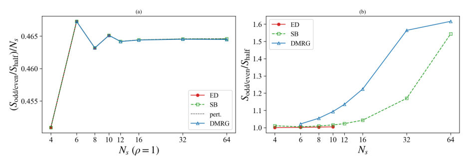
<figcaption class="paper-figure-caption"><b>Fig 2.</b> FIG. 3. Scaling with Ns at unit filling, comparing ED and SB. Left, t/U = 10−2 (MI). Right, t/U = 102 (SF).</figcaption>
</figure>
</div>

<p><strong>Summary.</strong> This paper analyzes the entanglement entropy in the 1D Bose-Hubbard model by comparing different spatial bipartitions (e.g., half vs. odd/even sites). Using a slave-boson approach, the authors reveal a significant anomaly in the Mott Insulator phase where the entanglement scaling differs drastically between contiguous and alternating cuts. This highlights that entanglement structure is not solely determined by global symmetries but by the specific geometry of the boundary.</p>
<p><strong>Why it may be interesting.</strong> This work provides a detailed, quantitative study of entanglement structure in a fundamental quantum model relevant to ultracold atoms, showing that entanglement scaling is highly sensitive to the geometric structure of the partition, a key concept in quantum many-body physics.</p>
<details>
<summary>Detailed structure</summary>
<p><strong>Main problem.</strong> The paper investigates how the geometry of the boundary affects the bipartite entanglement entropy in the 1D Bose-Hubbard model, comparing contiguous (half) versus alternating (odd/even) cuts.</p>
<p><strong>Main result.</strong> In the Mott Insulator regime, the entanglement entropy exhibits a clear anomaly: the half cut follows the area law, while the alternating cut follows a volume law, demonstrating partition-dependent scaling.</p>
<p><strong>Method.</strong> The authors employ a generalized slave-boson mean-field approach, supplemented by perturbation theory, and validate results using Exact Diagonalization (ED) and DMRG simulations.</p>
<p><strong>Model / system.</strong> The system is the 1D Bose-Hubbard model on a periodic lattice, described by a Hamiltonian involving hopping ($t$) and on-site interaction ($U$). The analysis covers both Mott Insulator (MI) and Superfluid (SF) regimes.</p>
<p><strong>Key observables.</strong> Bipartite entanglement entropy ($S_A$) for different spatial bipartitions (half, even/odd, single-site cuts).</p>
<p><strong>Important parameters / regimes.</strong> The ratio of interaction to hopping ($U/t$), which dictates the phase (MI vs. SF), and the lattice size ($N_s$).</p>
<p><strong>Assumptions / limitations.</strong> The slave-boson approach is used to compute entanglement entropy, and the analysis relies on perturbation theory in the MI regime and mean-field approximations in the SF regime.</p>
<p><strong>Figures summary.</strong> Figures compare entanglement entropy ($S_A$) across different cuts (half vs. even/odd) in the MI regime, showing the expected scaling difference, and illustrate the agreement between ED, SB, and perturbation theory results.</p>
<p><strong>Paper structure.</strong> The paper establishes the problem by comparing entanglement scaling laws for different cuts in the Bose-Hubbard model. It develops the slave-boson formalism to calculate $S_A$ for both cut types, derives analytical limits via perturbation theory in the MI phase, and verifies these findings against numerical benchmarks (ED/DMRG) across the phase diagram.</p>
</details>
<details>
<summary>Abstract</summary>
<p>The area law relates the bipartite entanglement entropy of a quantum many-body ground state to the size of the boundary between the subsystems, but the geometry of this boundary is rarely discussed. We inspect this in the 1D Bose-Hubbard model at fixed density by comparing four spatial bipartitions of the periodic lattice: first half, second half, even sites, and odd sites; sharing the same number of sites but differing in how the boundary is arranged. We find analytical limits with perturbation theory: in the Mott insulator the contiguous cut obeys the area lay while the alternating cut obeys a volume law $S\propto N_s$, in this sense an anomaly, and for the superfluid both cuts colapse to the binomial saturation due to delocalization of the state. We formulate these limits as a statement about the many-body problem using a generalized slave-boson approach based on mean-field with quantum fluctuations while verifying with Exact Diagonalization (ED) for small lattice sizes and Densitiy Matrix Renormalization Group (DMRG) simulations for $N_s\gg 1$. The slave-boson Gaussian ground state allows to compute the entanglement entropy from a reduced correlation matrix for any desired bipartition consistent with ED and DMRG results. Using slave bosons the computational cost is set by the local cutoff $n_{\max}$ rather than the Hilbert space dimension, so we can reach lattice sizes far beyond ED. Our method is capable of establishing the partition-dependent scaling laws as a many-body feature, not only a finite-size effect, in great agreement with the ED for $N_s\in[4,10]$ and DMRG for larger lattice sizes.</p>
</details>
<p><sub><a href="#top">↑ back to top</a></sub></p>

<p><a id="paper-2609.20721"></a></p>
<h3 id="quantum-simulation-of-dissipative-non-markovian-coupled-classical-oscillators"><a href="http://arxiv.org/abs/2609.20721v1">Quantum Simulation of Dissipative Non-Markovian Coupled Classical Oscillators</a></h3>
<p><strong>Authors:</strong> Malte Schade, Sophia Simon, Nathan Wiebe, Scott Keating, Cyrill Bösch, Andreas Fichtner<br>
<strong>Type:</strong> theory · <strong>Category:</strong> quantum information and computing · <strong>PDF:</strong> <a href="https://arxiv.org/pdf/2609.20721v1">https://arxiv.org/pdf/2609.20721v1</a><br>
<strong>Analysis basis:</strong> full PDF text, analyzed in chunks
<strong>Topic relevance:</strong> <code>correlated / nonlocal dissipation</code> <strong>3/5</strong> · <code>driven-dissipative phase transition</code> <strong>3/5</strong> · <code>methods for driven-dissipative</code> <strong>3/5</strong> · <code>Keldysh / 2PI / non-Gaussian methods</code> <strong>2/5</strong> · <code>analog quantum simulation</code> <strong>2/5</strong> · <code>non-equilibrium universality</code> <strong>2/5</strong> · <code>Frenkel-Kontorova</code> <strong>1/5</strong> · <code>quantum measurements</code> <strong>1/5</strong></p>
<div class="figure-strip-hint">↔ Scroll figures horizontally</div>
<div class="paper-figures-scroll">
<figure class="paper-figure-card">
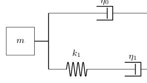
<figcaption class="paper-figure-caption"><b>Fig 1.</b> FIG. 2. Standard-Linear-Fluid (Jeffreys) model. The point mass (m) is coupled to a fixed wall through a purely viscous dashpot (η0) in parallel with a Maxwell element, which con- sists of a spring (k1) and a second dashpot (η1) in series.</figcaption>
</figure>
<figure class="paper-figure-card">
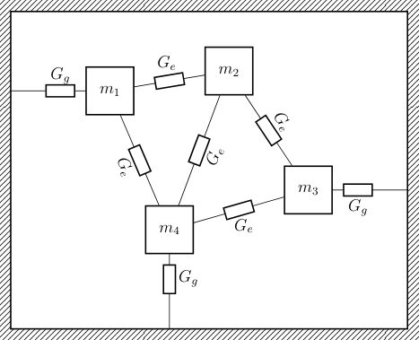
<figcaption class="paper-figure-caption"><b>Fig 2.</b> FIG. 3. Coupled oscillator network within a solid ground frame which is assumed to have infinite mass. The inter- actions between neighboring masses and the ground are ab- stracted into generalized coupling blocks (Ge and Gg, respec- tively), representing the composite Maxwell bodies and dash- pots.</figcaption>
</figure>
<figure class="paper-figure-card">
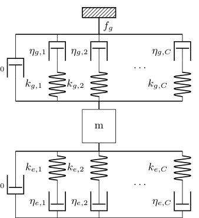
<figcaption class="paper-figure-caption"><b>Fig 3.</b> FIG. 4. A single coupling block of Figure 3. Mass m coupled to ground (top, Gg) and neighbor (bottom, Ge) via dashpots η0 in parallel with C Maxwell bodies (kc, ηc).</figcaption>
</figure>
<figure class="paper-figure-card">
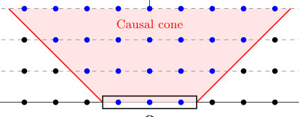
<figcaption class="paper-figure-caption"><b>Fig 4.</b> FIG. 5. Diagram of a light cone for an observable in one- dimension predicted via an information locality bound. The contribution to the evolution of the time-dependent observ- able Q from the subsystems outside the shaded area is expo- nentially small in the distance from the boundary of the light cone.</figcaption>
</figure>
<figure class="paper-figure-card">
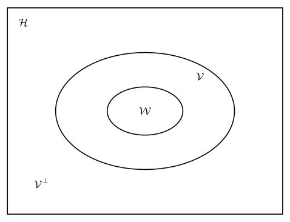
<figcaption class="paper-figure-caption"><b>Fig 5.</b> FIG. 6. Schematic diagram showing the ambient Hilbert space H along with the subspace of support for the observable Q, W the region included in the simulation V and the region excluded from the simulation V⊥</figcaption>
</figure>
</div>

<p><strong>Summary.</strong> This work presents a quantum algorithm to simulate complex classical oscillator networks featuring non-Markovian dissipation. By mapping the history-dependent dynamics to a solvable Markovian form, the authors demonstrate that energy estimation is classically hard (BQP-complete) and that quantum computation offers significant polynomial speedups for these realistic, damped systems.</p>
<p><strong>Why it may be interesting.</strong> It directly tackles the simulation of open quantum systems (dissipation) using quantum algorithms, which is a major frontier in quantum computation, by establishing quantum advantage even when the underlying physics is complex and non-Markovian.</p>
<details>
<summary>Detailed structure</summary>
<p><strong>Main problem.</strong> Developing a quantum algorithm to simulate classical oscillator networks characterized by non-Markovian dissipation and time-varying material properties.</p>
<p><strong>Main result.</strong> The energy estimation task for these systems is shown to be in the worst-case classically hard (BQP-complete), and the quantum algorithm provides quartic speedups for locally coupled damped oscillator systems in three dimensions.</p>
<p><strong>Method.</strong> The authors embed history-dependent dynamics into a Markovian state space using Prony series approximation, then employ Linear Combination of Hamiltonian Simulation (LCHS) to estimate energy.</p>
<p><strong>Model / system.</strong> The system models coupled classical oscillators, extending from simple harmonic motion to viscoelastic media (like Kelvin-Voigt or Maxwell bodies) exhibiting non-Markovian dissipation.</p>
<p><strong>Key observables.</strong> Instantaneous kinetic and potential energy of a subset of oscillators at time t; the ratio of the evolved state norm to the initial state norm.</p>
<p><strong>Important parameters / regimes.</strong> Dissipation strength ($\alpha_{
m tot}$), time $t$, error $\epsilon$, and the dimensionality/topology of the coupling network.</p>
<p><strong>Assumptions / limitations.</strong> The non-Markovian dynamics are approximated by a finite sum of coupled Markovian ODEs via a Prony series expansion.</p>
<p><strong>Figures summary.</strong> Figures illustrate various damped oscillator models, including Kelvin-Voigt and Standard-Linear-Fluid viscoelasticity, and show the structure of coupled oscillator networks.</p>
<p><strong>Paper structure.</strong> The paper progresses from establishing the difficulty of non-Markovian simulation, detailing the mathematical embedding into a Markovian system, analyzing the resulting spectral properties via perturbation theory, and finally proving the quantum computational hardness/speedup via state evolution analysis.</p>
</details>
<details>
<summary>Abstract</summary>
<p>We present a quantum algorithm for simulating classical oscillator networks characterized by non-Markovian dissipation and time-varying material properties, extending recent speedups for undamped harmonic systems to viscoacoustic and viscoelastic media. We embed the history-dependent dynamics into a Markovian state space governed by a non-Hermitian operator by approximating memory kernels through a Prony series. We then use linear combination of Hamiltonian simulation to estimate the instantaneous kinetic and potential energy for a subset of oscillators at time $t$ within error $ε$ using a number of queries to the oscillator system that scales as $\widetilde{\mathcal{O}}(α_{\rm tot} t/ε)$, where $α_{\rm tot}$ is polynomial in the strength of the dissipation, spring constants, inverse masses, and sparsity of the connections in the network. We further show that this energy estimation task is in the worst-case classically hard (i.e., a corresponding decision problem is $\mathsf{BQP}$-complete), even in the presence of strong dissipation. For time-dependent materials, we show that changes in material properties appear as effective dissipation or growth in the energy representation. Additionally, we prove the infeasibility of exponential quantum advantages in locally coupled topologies through a novel form of Lieb-Robinson-like bounds that apply to differential equations. This allows our quantum algorithms to provide quartic speedups for locally coupled damped oscillator systems in three dimensions, raising the possibility of practical quantum speedups for realistically damped oscillator networks and approximated wave equations.</p>
</details>
<p><sub><a href="#top">↑ back to top</a></sub></p>

<p><a id="paper-2609.19995"></a></p>
<h3 id="encounter-propagator-for-multiple-targets-a-dirichlet-to-neumann-spectral-formalism"><a href="http://arxiv.org/abs/2609.19995v1">Encounter Propagator for Multiple Targets: A Dirichlet-to-Neumann Spectral Formalism</a></h3>
<p><strong>Authors:</strong> Denis S. Grebenkov<br>
<strong>Type:</strong> theory · <strong>Category:</strong> statistical mechanics · <strong>PDF:</strong> <a href="https://arxiv.org/pdf/2609.19995v1">https://arxiv.org/pdf/2609.19995v1</a><br>
<strong>Analysis basis:</strong> full PDF text, analyzed in chunks
<strong>Topic relevance:</strong> <code>Keldysh / 2PI / non-Gaussian methods</code> <strong>3/5</strong> · <code>correlated / nonlocal dissipation</code> <strong>3/5</strong> · <code>methods for driven-dissipative</code> <strong>3/5</strong> · <code>driven-dissipative phase transition</code> <strong>2/5</strong> · <code>non-equilibrium universality</code> <strong>2/5</strong> · <code>quantum measurements</code> <strong>2/5</strong> · <code>analog quantum simulation</code> <strong>1/5</strong></p>
<div class="figure-strip-hint">↔ Scroll figures horizontally</div>
<div class="paper-figures-scroll">
<figure class="paper-figure-card">
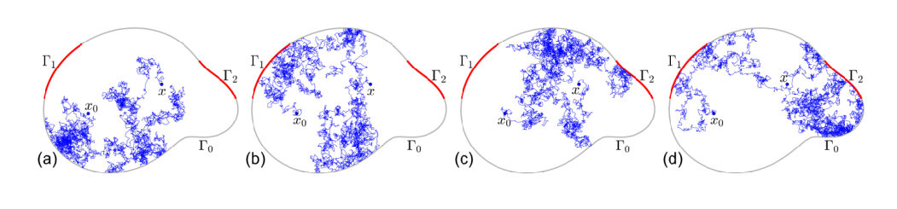
<figcaption class="paper-figure-caption"><b>Fig 1.</b> FIG. 1. Schematic representation of the two-target encounter problem in a planar bounded domain Ω, whose boundary ∂Ω is partitioned into the reflecting part Γ0 and two target regions Γ1 and Γ2. During a given time t, the particle diffuses from a point x0 to a point x, and accumulates boundary local times ℓ1,t and ℓ2,t on the target regions Γ1 and Γ2. Four representative cases are shown: (a) ℓ1,t = 0, ℓ2,t = 0; (b) ℓ1,t &gt; 0, ℓ2,t = 0; (c) ℓ1,t = 0, ℓ2,t &gt; 0; and (d) ℓ1,t &gt; 0, ℓ2,t &gt; 0. Blue curve shows a simulated random trajectory in each case.</figcaption>
</figure>
</div>

<p><strong>Summary.</strong> This paper develops a spectral formalism to calculate the encounter propagator for diffusion processes encountering multiple distinct targets on a boundary. By decomposing the governing Dirichlet-to-Neumann operator into target-specific blocks, the authors overcome mathematical difficulties associated with non-commuting operators. The resulting framework yields an exact spectral representation for the two-target case, providing deep insights into diffusion-controlled reaction rates.</p>
<p><strong>Why it may be interesting.</strong> The rigorous mathematical treatment of non-commuting operators (DtN vs. projection operators) and the resulting spectral methods are highly relevant for modeling open quantum systems where dissipation or coupling to multiple baths/channels occurs.</p>
<details>
<summary>Detailed structure</summary>
<p><strong>Main problem.</strong> Developing a rigorous, spectral formulation for the encounter propagator in restricted diffusion within a bounded domain containing multiple reactive targets.</p>
<p><strong>Main result.</strong> The authors derive a convergent switching expansion for the propagator, providing explicit spectral representations for the two-target case, which can be resummed exactly using modified Bessel functions under certain conditions.</p>
<p><strong>Method.</strong> The methodology involves decomposing the Dirichlet-to-Neumann (DtN) operator into target-restricted blocks and performing multi-dimensional Laplace inversion to handle the joint local-time dependence.</p>
<p><strong>Model / system.</strong> The model is restricted diffusion in a bounded domain $\Omega$ with multiple targets $\Gamma_i$ on the boundary. The physics is governed by the diffusion equation with complex boundary conditions related to local time accumulation.</p>
<p><strong>Key observables.</strong> The encounter propagator $P(x, \ell_1, \dots, \ell_N, t|x_0)$ and its Laplace transform $eP(x, \ell_1, \dots, \ell_N, p|x_0)$.</p>
<p><strong>Important parameters / regimes.</strong> The number of targets ($N$), the separation distance between targets, and the Laplace variable $p$.</p>
<p><strong>Assumptions / limitations.</strong> The analysis relies on decomposing the DtN operator into blocks and assumes conditions (like separation) that allow for spectral diagonalization or low-rank approximations.</p>
<p><strong>Figures summary.</strong> Figure 1 schematically illustrates the two-target encounter problem, partitioning the boundary into reflecting and reactive target regions ($\Gamma_1, \Gamma_2$).</p>
<p><strong>Paper structure.</strong> The paper progresses from the single-target case to the multi-target generalization, focusing on decomposing the DtN operator, deriving the switching expansion via multi-dimensional Laplace inversion, and finally presenting spectral representations and asymptotic analyses for the two-target case.</p>
</details>
<details>
<summary>Abstract</summary>
<p>We develop an encounter-based formulation of restricted diffusion in a bounded domain with multiple targets, resolving separately the boundary local time accumulated on each target. Unlike the single-target problem, the target projection operators do not generally commute with the governing Dirichlet-to-Neumann (DtN) operator, so that its eigenbasis does not diagonalize the local-time dependence. We overcome this difficulty by decomposing the DtN operator into target-restricted blocks. Multi-dimensional Laplace inversion then yields a convergent switching expansion, whose successive terms describe alternating diffusive transfers between the targets. We also derive an equivalent operator-valued renewal equation. For two targets, diagonalizing the target-restricted blocks provides an explicit spectral representation in terms of two DtN block spectra and an inter-target coupling matrix. When the coupling preserves spectral modes, the switching series can be resummed exactly in terms of modified Bessel functions. In general, as the off-diagonal DtN block is smoothing for separated targets, one can resort to low-rank finite-dimensional approximations. We examine an effective two-mode reduction for small, well-separated targets and identify a regime in which repeated inter-target transfers are progressively suppressed. Probabilistic interpretations and implications for diffusion-controlled reactions are discussed.</p>
</details>
<p><sub><a href="#top">↑ back to top</a></sub></p>

<p><a id="paper-2609.19254"></a></p>
<h3 id="emergent-classicality-and-wavefunction-branching-in-an-isolated-quantum-many-body-system"><a href="http://arxiv.org/abs/2609.19254v1">Emergent classicality and wavefunction branching in an isolated quantum many-body system</a></h3>
<p><strong>Authors:</strong> Saúl Pilatowsky-Cameo, Jordan Cotler, Daniel Ranard, C. Jess Riedel<br>
<strong>Type:</strong> theory · <strong>Category:</strong> other · <strong>PDF:</strong> <a href="https://arxiv.org/pdf/2609.19254v1">https://arxiv.org/pdf/2609.19254v1</a><br>
<strong>Analysis basis:</strong> full PDF text, analyzed in chunks
<strong>Topic relevance:</strong> <code>analog quantum simulation</code> <strong>3/5</strong> · <code>correlated / nonlocal dissipation</code> <strong>2/5</strong> · <code>driven-dissipative phase transition</code> <strong>2/5</strong> · <code>methods for driven-dissipative</code> <strong>2/5</strong> · <code>quantum measurements</code> <strong>2/5</strong> · <code>scars &amp; prethermalization</code> <strong>2/5</strong> · <code>Keldysh / 2PI / non-Gaussian methods</code> <strong>1/5</strong> · <code>non-equilibrium universality</code> <strong>1/5</strong></p>
<div class="figure-strip-hint">↔ Scroll figures horizontally</div>
<div class="paper-figures-scroll">
<figure class="paper-figure-card">
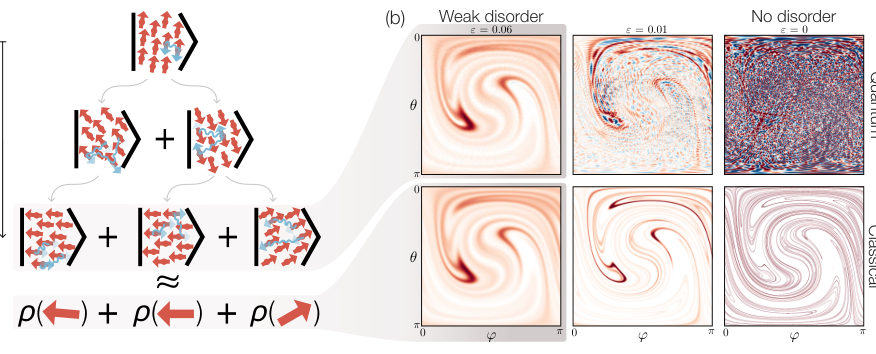
<figcaption class="paper-figure-caption"><b>Fig 1.</b> FIG. 1. (a) Emergence of decoherence in an isolated many-body system of spins. The system is initialized with all spins pointing in the same direction, with the exception of a few particles coupled in singlets (blue). The disorder in the Hamiltonian scrambles the singlets throughout, leading to microscopically distinct branches that cannot interfere in collective observables, so their superposition is indistinguishable from a classical mixture. (b) Emergence of classicality. Wigner function of the quantum evolution in the collective spin sector (top) and classical evolution according to the classical dissipative equation (7) (bottom). In the presence of a single realization of a small...</figcaption>
</figure>
<figure class="paper-figure-card">
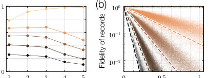
<figcaption class="paper-figure-caption"><b>Fig 2.</b> FIG. 3. (a) Quantum branching. Trace distance between the reduced state of the global unitary dynamics and the mixture of branches [left and right sides of Eq. (14), respectively], for different values of disorder ε and number of branchings M. (b) Consistent histories. Fidelity of records vs cumulative squared distance between histories D(2) after M = 5 branchings. Each dot is a pair of independently sampled branches. Dashed lines mark the decay e−ΓD(2). (N = 100, k = 4, κ = 4.2, p = π/2, θ0 = 0.5, φ0 = 1.1, ∆t = 1)</figcaption>
</figure>
</div>

<p><strong>Summary.</strong> This work demonstrates that classical behavior can emerge in isolated quantum systems by treating internal microscopic degrees of freedom as an effective bath. Using a kicked top model, the authors derive an effective Lindblad equation whose classical limit is a chaotic Fokker-Planck equation. This shows that quantum evolution naturally branches into distinct classical histories without external environmental coupling.</p>
<p><strong>Why it may be interesting.</strong> It provides a mechanism for quantum-to-classical transition entirely within the system's Hamiltonian structure, which is highly relevant for understanding complex quantum dynamics in isolated materials.</p>
<details>
<summary>Detailed structure</summary>
<p><strong>Main problem.</strong> To explain how classical behavior emerges in isolated quantum many-body systems without relying on coupling to an external environment.</p>
<p><strong>Main result.</strong> Classicality emerges internally from microscopic degrees of freedom, leading to reduced dynamics that converge to a classical chaotic Fokker-Planck equation beyond the Ehrenfest time.</p>
<p><strong>Method.</strong> The authors derive an effective Lindblad equation for the macroscopic spin sector by tracing out the microscopic permutation sector, and analyze the resulting quantum-classical correspondence.</p>
<p><strong>Model / system.</strong> The model is a weakly disordered, 3-local chaotic kicked top of N qubits, decomposed into a macroscopic collective spin sector (S) and a microscopic permutation sector (P) acting as an internal bath.</p>
<p><strong>Key observables.</strong> Classicality, quantum-classical correspondence, wavefunction branching, and the fidelity of microscopic records.</p>
<p><strong>Important parameters / regimes.</strong> Disorder strength ($\varepsilon$), system size ($N$), and the thermodynamic limit ($N 	o \infty$).</p>
<p><strong>Assumptions / limitations.</strong> The standard decoherence theory assumption of coupling to an external environment is bypassed; the system-bath decomposition is emergent.</p>
<p><strong>Figures summary.</strong> Figure 1 illustrates decoherence and classicality in the spin sector; Figure 2 shows the effective Lindblad dynamics and rate convergence.</p>
<p><strong>Paper structure.</strong> The paper establishes the internal mechanism for decoherence in isolated systems, derives the effective dynamics via a Lindblad equation, confirms the convergence to a classical Fokker-Planck equation, and analyzes wavefunction branching using consistent histories.</p>
</details>
<details>
<summary>Abstract</summary>
<p>Decoherence in quantum systems is conventionally modeled as the effect of interactions with an external environment. However, such a prescription excludes isolated many-body systems, which are also expected to display classical behavior at macroscopic scales. In isolated systems, decoherence must emerge internally from microscopic degrees of freedom that are invisible to the macroscopic description. Here we explicitly show that classicality can emerge in such a fashion. We consider a weakly disordered, $3$-local chaotic kicked top of $N$ qubits, where the collective spin sector serves as the macroscopic description, while the microscopic permutation sector acts as an internal bath, decohering the collective spin sector. Starting from closed unitary dynamics, we derive and numerically confirm an effective Lindblad equation for the collective spin variables. In the thermodynamic limit these reduced dynamics converge to a classical chaotic Fokker--Planck equation with vanishingly small diffusion on the spherical phase space, producing a quantum-classical correspondence beyond the Ehrenfest time. The chaotic dynamics evolve the pure many-body wavefunction into continuously branching components associated with distinct classical trajectories. These branches acquire nearly orthogonal microscopic records in the permutation sector, preventing quantum interferences and ensuring the corresponding histories remain consistent.</p>
</details>
<p><sub><a href="#top">↑ back to top</a></sub></p>

<p><a id="paper-2609.20523"></a></p>
<h3 id="noise-robust-quantum-state-characterization-for-remote-state-preparation-with-deep-learning"><a href="http://arxiv.org/abs/2609.20523v1">Noise-Robust Quantum State Characterization for Remote State Preparation with Deep Learning</a></h3>
<p><strong>Authors:</strong> Bo Tang, Zixuan Liao, Hao Li, Yilin Yang, Jiani Lei, Zengya Li, Jing Qiu, Zhaohui Dong, Zhengyang Mao, Yuanhua Li, Yuanlin Zheng, Xianfeng Chen<br>
<strong>Type:</strong> both · <strong>Category:</strong> quantum information and computing · <strong>PDF:</strong> <a href="https://arxiv.org/pdf/2609.20523v1">https://arxiv.org/pdf/2609.20523v1</a><br>
<strong>Analysis basis:</strong> full PDF text, analyzed in chunks
<strong>Topic relevance:</strong> <code>QC/QI experiment</code> <strong>3/5</strong> · <code>methods for driven-dissipative</code> <strong>3/5</strong> · <code>quantum measurements</code> <strong>3/5</strong> · <code>quantum optics experiment</code> <strong>3/5</strong></p>
<div class="figure-strip-hint">↔ Scroll figures horizontally</div>
<div class="paper-figures-scroll">
<figure class="paper-figure-card">
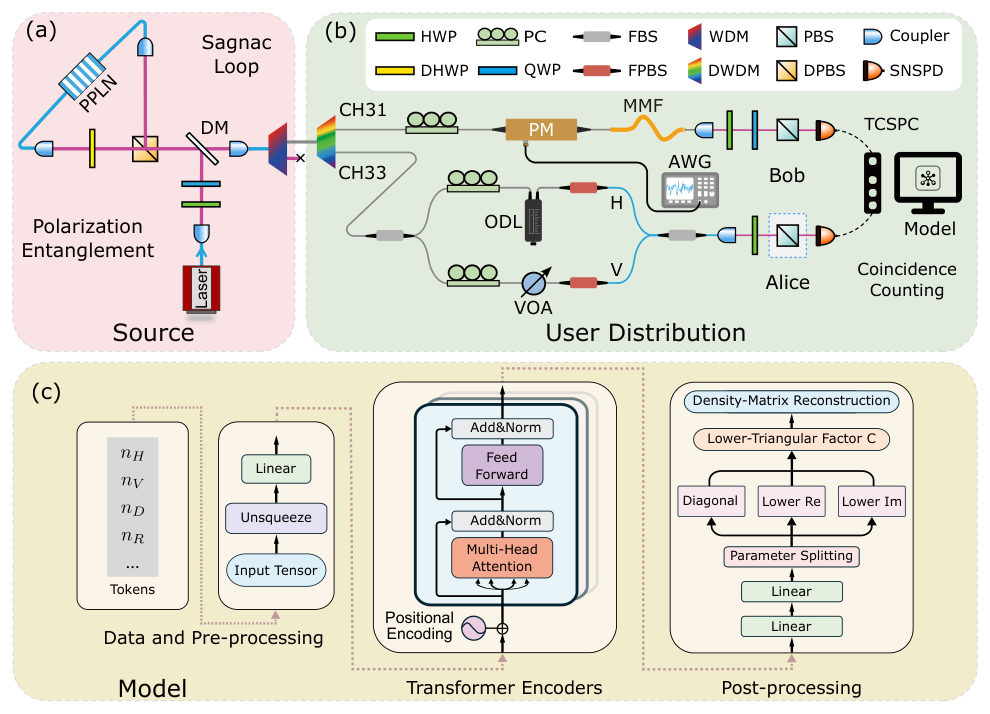
<figcaption class="paper-figure-caption"><b>Fig 1.</b> Figure 1: Schematic diagram of the experimental setup for RSP. (a) Polarization entanglement source based on Sagnac loop. (b) RSP of user distribution device. PPLN, periodically poled lithium niobate waveguide; DM, dichroic mirror; HWP, half- wave plate; DHWP, dual-wavelength half-wave plate; QWP, quarter-wave plate; PC, polarizaton controller; FBS, fiber beam splitter; FPBS, fiber polarization beam splitter; WDM, wavelength division multiplexing; DWDM, dense wavelength division multiplexing; PM, phase modulator; AWG, arbitrary waveform generator; PBS, polarizing beam splitter; DPBS, dual-polarizing beam splitter; MMF, multimode fiber; ODL, optical delay line; VOA, variable optical...</figcaption>
</figure>
<figure class="paper-figure-card">
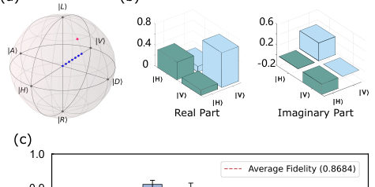
<figcaption class="paper-figure-caption"><b>Fig 2.</b> Figure 2: Characterization and verification of RSP. (a) Re- mote quantum states are prepared on the Bloch ball, with the pure state shown as a red dot and mixed states shown as blue dots [61]. (b) The real and imaginary parts of the density matrix with η = 1. (c) Reconstruction fidelity of the pure state and mixed states prepared via RSP through an MMF.</figcaption>
</figure>
<figure class="paper-figure-card">
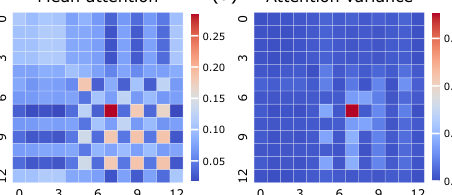
<figcaption class="paper-figure-caption"><b>Fig 3.</b> Figure 3: Performance and attention analysis of the TQSC model. (a) Fidelity distributions for the training and test datasets. (b) Excess fidelity drop from targeted token-group interventions relative to size-matched random ablations. (c) Mean attention map of Layer 3 Head 4 (L3H4). (d) Attention variance map of L3H4. In (c) and (d), the query (y) and key (x) axes index the 13 input tokens (0–12), comprising H/V/D/R coincidence counts, the corresponding Alice and Bob single-photon counts, and measurement time.</figcaption>
</figure>
<figure class="paper-figure-card">
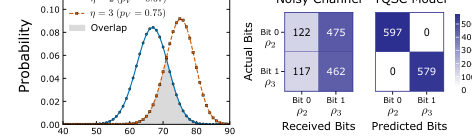
<figcaption class="paper-figure-caption"><b>Fig 4.</b> Figure 4: TQSC-based image transmission and recon- struction. (a) Degradation and recovery of BTC-compressed MNIST images through the noisy channel. (b) Probability distributions of |V ⟩measurement outcomes (N = 100) for mixed states ρ2 and ρ3. (c) Confusion matrices for the noisy channel (left) and TQSC predictions (right).</figcaption>
</figure>
</div>

<p><strong>Summary.</strong> This paper introduces a Transformer-based Quantum State Characterizer (TQSC) to overcome the difficulty of accurately characterizing quantum states during noisy Remote State Preparation. By treating measurement data as a sequence, the model reconstructs the true quantum state with extremely high fidelity, even in the presence of complex scattering and dynamic noise. This work offers a robust, data-driven tool for practical quantum information processing applications.</p>
<p><strong>Why it may be interesting.</strong> It provides a powerful, data-driven framework for quantum state tomography and characterization that explicitly handles complex, realistic noise sources, which is crucial for advancing quantum networking and communication protocols.</p>
<details>
<summary>Detailed structure</summary>
<p><strong>Main problem.</strong> The core challenge is accurately estimating target quantum states during Remote State Preparation (RSP) when the measurements are corrupted by complex, dynamic noise.</p>
<p><strong>Main result.</strong> The proposed TQSC model achieved an extremely high mean estimator-target fidelity (&gt;99.999%) under complex noise and successfully reduced the bit error rate to zero in a practical MNIST image transmission task.</p>
<p><strong>Method.</strong> The authors developed a Transformer-based Quantum State Characterizer (TQSC) model that treats noisy measurement outcomes as sequential data to reconstruct the underlying quantum density matrix.</p>
<p><strong>Model / system.</strong> The system involves photonic polarization states generated via an SPDC source in a Sagnac interferometer setup. The TQSC model uses a Transformer Encoder architecture to map noisy measurement data back to the predicted quantum state, incorporating physical constraints.</p>
<p><strong>Key observables.</strong> Mean estimator-target fidelity, bit error rate (BER), density matrices ($
ho$), and Transformer attention patterns.</p>
<p><strong>Important parameters / regimes.</strong> Complex scattering environments, dynamic Gaussian noise ($\sigma=1 	ext{ V}$), and the fidelity threshold of 99.999%.</p>
<p><strong>Assumptions / limitations.</strong> The method assumes that the noise can be modeled and inverted using a data-driven, attention-based neural network structure, moving beyond traditional black-box approaches.</p>
<p><strong>Figures summary.</strong> Figure 1 illustrates the experimental setup (Sagnac loop, RSP) and the data processing pipeline involving the Transformer. Other figures detail the performance metrics under noise and the MNIST image transmission results.</p>
<p><strong>Paper structure.</strong> The paper introduces the problem of noisy RSP, details the TQSC model architecture (Transformer-based inverse channel mapping), validates its performance using fidelity metrics under controlled noise, and demonstrates its utility in a practical image transmission task.</p>
</details>
<details>
<summary>Abstract</summary>
<p>Quantum communication underpins secure information processing and scalable quantum networks. In particular, remote state preparation (RSP) enables efficient quantum state transfer, but accurately estimating target states under complex noise remains challenging. Here, we propose a Transformer-based Quantum State Characterizer (TQSC) model for noisy RSP experiments. Our model reconstructs experimentally prepared pure and mixed photonic polarization states from noisy measurements in complex scattering environments, while its attention patterns provide physically grounded insights into correlations among the measured observables. The method achieves a mean estimator-target fidelity exceeding 99.999% under complex scattering and dynamic Gaussian noise, while its robustness and generalization are further examined using Qiskit-simulated Bloch-ball states.Furthermore, in a practical MNIST image transmission task with held-out states, the decoded bit error rate is reduced from 50.34% to zero after TQSC post-processing. The TQSC model enables accurate tomographic characterization under dynamic noise and provides physically grounded post-hoc insights, holding promise for intelligent quantum information processing applications.</p>
</details>
<p><sub><a href="#top">↑ back to top</a></sub></p>

<p><a id="paper-2609.19404"></a></p>
<h3 id="fifty-years-of-the-gkls-master-equation-foundations-and-early-developments"><a href="http://arxiv.org/abs/2609.19404v1">Fifty Years of the GKLS Master Equation: Foundations and Early Developments</a></h3>
<p><strong>Authors:</strong> Fabio Benatti, Dariusz Chruściński, Saverio Pascazio<br>
<strong>Type:</strong> theory · <strong>Category:</strong> other · <strong>PDF:</strong> <a href="https://arxiv.org/pdf/2609.19404v1">https://arxiv.org/pdf/2609.19404v1</a><br>
<strong>Analysis basis:</strong> full PDF text, analyzed in chunks
<strong>Topic relevance:</strong> <code>methods for driven-dissipative</code> <strong>3/5</strong> · <code>correlated / nonlocal dissipation</code> <strong>2/5</strong> · <code>driven-dissipative phase transition</code> <strong>2/5</strong> · <code>Keldysh / 2PI / non-Gaussian methods</code> <strong>1/5</strong> · <code>analog quantum simulation</code> <strong>1/5</strong> · <code>non-equilibrium universality</code> <strong>1/5</strong> · <code>quantum measurements</code> <strong>1/5</strong></p>
<div class="figure-strip-hint">↔ Scroll figures horizontally</div>
<div class="paper-figures-scroll">
<figure class="paper-figure-card">
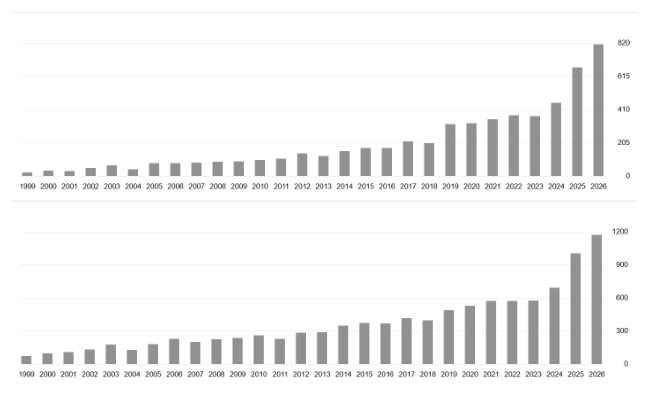
<figcaption class="paper-figure-caption"><b>Fig 1.</b> Figure 1: Citations counts (Scholar Google 20th August, 2026): upper panel – GKS paper; lower panel – Lindblad paper.</figcaption>
</figure>
<figure class="paper-figure-card">
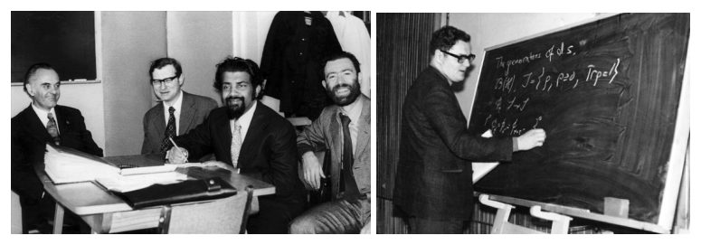
<figcaption class="paper-figure-caption"><b>Fig 2.</b> Figure 2: Left panel: picture taken in Prof. Ingarden’s office (December 1975). From left to right: Roman Ingarden, Andrzej Kossakowski, George Sudarshan and Vittorio Gorini. Right panel: picture taken during the Symposium on Mathematical Physics in Toruń (December 1974) – Göran Lindblad lecturing about quantum dynamical semigroups.</figcaption>
</figure>
</div>

<p><strong>Summary.</strong> This paper provides a comprehensive historical review of the Gorini-Kossakowski-Lindblad-Sudarshan (GKLS) master equation. It traces how disparate mathematical and physical ideas converged to establish the structural theorem for open quantum dynamics. It remains crucial reading for understanding the foundations of Markovian evolution in quantum physics.</p>
<p><strong>Why it may be interesting.</strong> This is foundational reading for anyone working on open quantum systems, quantum optics, or quantum information, as it solidifies the mathematical bedrock upon which modern open system theories are built.</p>
<details>
<summary>Detailed structure</summary>
<p><strong>Main problem.</strong> The paper revisits the historical and conceptual development required to characterize the generators of completely positive quantum dynamical semigroups.</p>
<p><strong>Main result.</strong> It confirms that the GKLS structure theorem remains the foundational and active framework for describing Markovian open quantum dynamics, unifying concepts from various mathematical and physical approaches.</p>
<p><strong>Method.</strong> The analysis is historical and conceptual, tracing the convergence of ideas from seminal works by Sudarshan, Bausch, Kossakowski, and Lindblad.</p>
<p><strong>Model / system.</strong> The focus is on open quantum systems whose evolution is governed by a density operator $\rho_t$ and described by the GKLS master equation: $\dot{\rho}_t = L(\rho_t)$.</p>
<p><strong>Key observables.</strong> The evolution of the density operator $\rho_t$, and the requirement of complete positivity for the dynamical map.</p>
<p><strong>Important parameters / regimes.</strong> The Markovian nature of the evolution, and the time scale separation inherent in the weak-coupling limit.</p>
<p><strong>Assumptions / limitations.</strong> The primary assumption is that the system dynamics are Markovian, which allows for the description via a time-local master equation.</p>
<p><strong>Figures summary.</strong> Figure 1 shows the citation history of the GKS and Lindblad papers, demonstrating their enduring relevance. Figure 2 contains historical photographs related to the development of the theory.</p>
<p><strong>Paper structure.</strong> The paper traces the mathematical journey from early characterizations (Sudarshan, Bausch) to the final structural theorems (GKS and Lindblad), reviewing subsequent developments like quantum stochastic calculus and quantum jump unraveling.</p>
</details>
<details>
<summary>Abstract</summary>
<p>The year 2026 marks the fiftieth anniversary of the two seminal papers in which Gorini, Kossakowski, and Sudarshan, and independently Lindblad, characterized the generators of completely positive quantum dynamical semigroups. We revisit the conceptual and historical route leading to the Gorini-Kossakowski-Lindblad-Sudarshan (GKLS) master equation and examine several of its early developments and consequences. Our aim is to show how several initially separate mathematical and physical ideas converged in the GKLS structure theorem, imme- diately opening the way to manifold consequences for the description of dissipative quantum phenomena and how that theorem, fifty years later, remains both a foundational result and an active framework for open quantum dynamics.</p>
</details>
<p><sub><a href="#top">↑ back to top</a></sub></p>

<p><a id="paper-2609.20525"></a></p>
<h3 id="formal-fluctuation-response-relations-for-non-stationary-systems-the-dynamic-conjugate-variable"><a href="http://arxiv.org/abs/2609.20525v1">Formal Fluctuation-Response Relations for Non-Stationary Systems: The Dynamic Conjugate Variable</a></h3>
<p><strong>Authors:</strong> Igor M. Sokolov<br>
<strong>Type:</strong> theory · <strong>Category:</strong> statistical mechanics · <strong>PDF:</strong> <a href="https://arxiv.org/pdf/2609.20525v1">https://arxiv.org/pdf/2609.20525v1</a><br>
<strong>Analysis basis:</strong> full PDF text, analyzed in chunks
<strong>Topic relevance:</strong> <code>Keldysh / 2PI / non-Gaussian methods</code> <strong>3/5</strong> · <code>methods for driven-dissipative</code> <strong>3/5</strong> · <code>analog quantum simulation</code> <strong>1/5</strong> · <code>correlated / nonlocal dissipation</code> <strong>1/5</strong> · <code>driven-dissipative phase transition</code> <strong>1/5</strong> · <code>non-equilibrium universality</code> <strong>1/5</strong> · <code>quantum measurements</code> <strong>1/5</strong></p>
<div class="figure-strip-hint">↔ Scroll figures horizontally</div>
<div class="paper-figures-scroll">
<figure class="paper-figure-card">
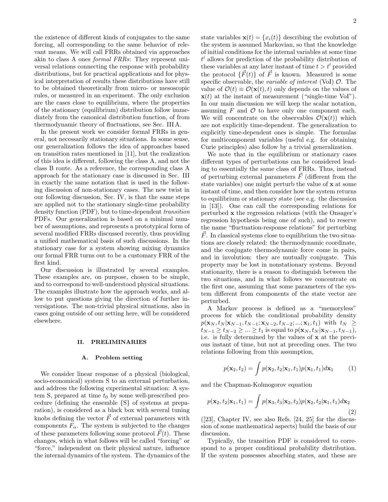
<figcaption class="paper-figure-caption"><b>Fig 1.</b> Low-resolution page preview, page 2</figcaption>
</figure>
<figure class="paper-figure-card">
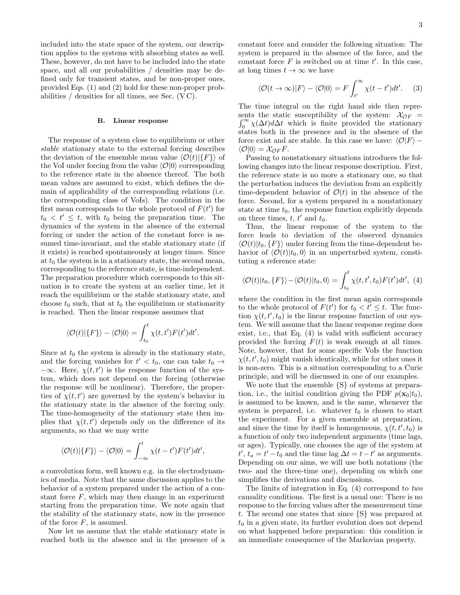
<figcaption class="paper-figure-caption"><b>Fig 2.</b> Low-resolution page preview, page 3</figcaption>
</figure>
<figure class="paper-figure-card">
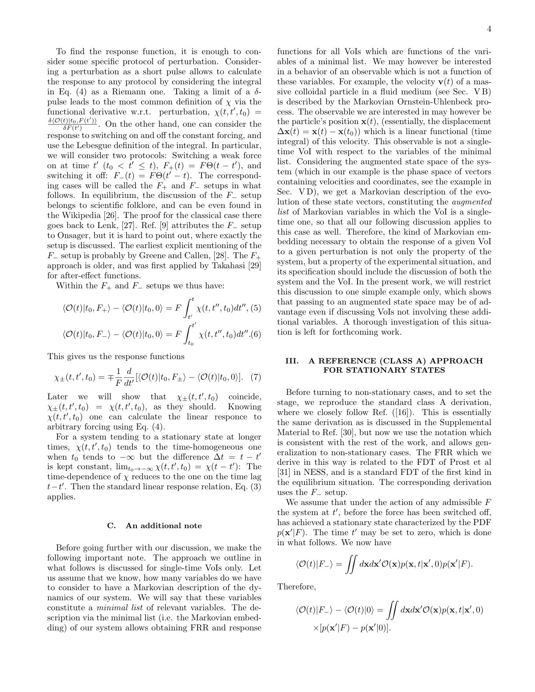
<figcaption class="paper-figure-caption"><b>Fig 3.</b> Low-resolution page preview, page 4</figcaption>
</figure>
<figure class="paper-figure-card">
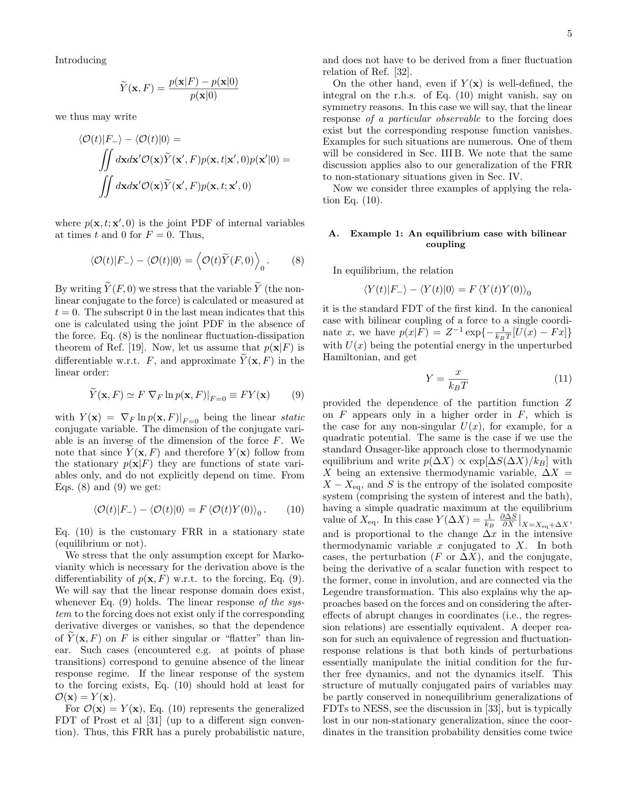
<figcaption class="paper-figure-caption"><b>Fig 4.</b> Low-resolution page preview, page 5</figcaption>
</figure>
<figure class="paper-figure-card">
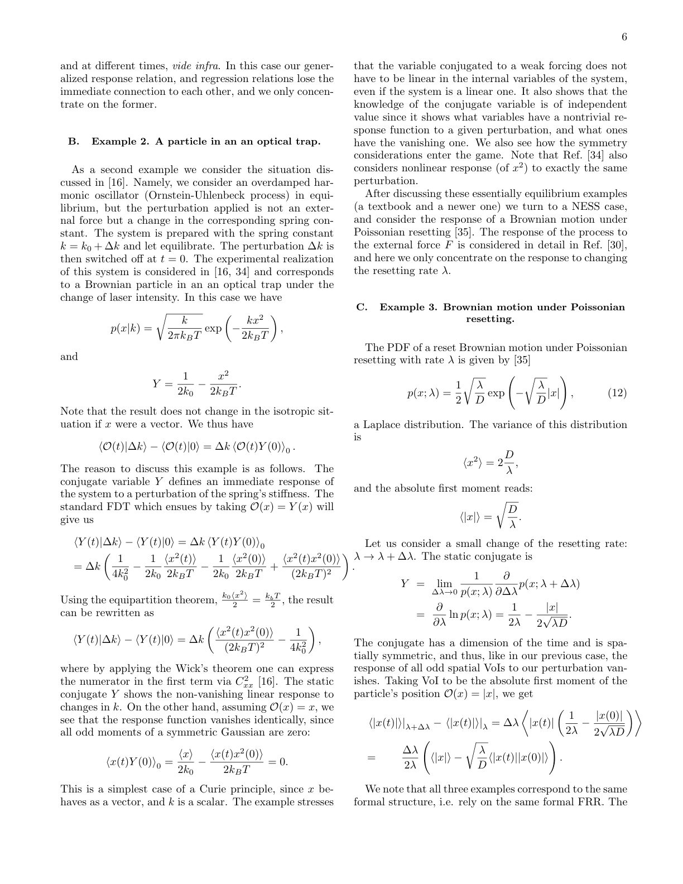
<figcaption class="paper-figure-caption"><b>Fig 5.</b> Low-resolution page preview, page 6</figcaption>
</figure>
</div>

<p><strong>Summary.</strong> This paper presents a generalized theoretical framework for deriving Fluctuation-Response Relations (FRRs) applicable to non-stationary physical systems. It introduces a 'dynamic conjugate variable' derived solely from the Markovian property of the dynamics. This formalism unifies existing FRR results, providing a robust tool for analyzing linear response in time-dependent settings.</p>
<p><strong>Why it may be interesting.</strong> This work provides a powerful, general theoretical tool for calculating response functions in complex, time-evolving systems, which is crucial for understanding non-equilibrium dynamics in AMO and condensed matter physics.</p>
<details>
<summary>Detailed structure</summary>
<p><strong>Main problem.</strong> The paper develops a formal framework to derive Fluctuation-Response Relations (FRRs) for systems exhibiting non-stationary dynamics.</p>
<p><strong>Main result.</strong> It establishes a generalized formal FRR using a 'dynamic conjugate variable' that reduces to known results in stationary limits, providing a unified mathematical basis for response theory.</p>
<p><strong>Method.</strong> The methodology involves introducing a dynamic conjugate variable conjugated to the external perturbation and relying on the Markovianity of the underlying dynamics.</p>
<p><strong>Model / system.</strong> The framework is general, applicable to any stochastic system described by time-dependent probability density functions, with specific examples analyzed using Langevin dynamics (e.g., Ornstein-Uhlenbeck process) and diffusion equations.</p>
<p><strong>Key observables.</strong> Response function $\chi(t, t', t_0)$, mean values $\langle O(t)|\{F\}
angle$, and the dynamic conjugate variable $Y(x, v, t|v_0)$.</p>
<p><strong>Important parameters / regimes.</strong> The analysis focuses on the linear response regime, and the results depend on the system's Markovian nature and the time-dependence of the forcing.</p>
<p><strong>Assumptions / limitations.</strong> The dynamics are assumed to be Markovian, and the analysis is restricted to the linear response regime.</p>
<p><strong>Figures summary.</strong> The notes describe mathematical derivations and solutions for correlation functions and response functions in specific physical limits (e.g., overdamped/underdamped motion).</p>
<p><strong>Paper structure.</strong> The paper builds from the general definition of FRRs, develops the formalism using the dynamic conjugate variable for non-stationary cases, and then applies this formalism to specific physical models like the OU process and forced diffusion.</p>
</details>
<details>
<summary>Abstract</summary>
<p>Fluctuation-response relations (FRRs) connect the linear response of a system to an external perturbation with properties of spontaneous fluctuations in the unperturbed system. We provide a simple derivation of FRRs for non-stationary dynamics following an almost standard way based on introducing a variable conjugated to perturbation (a dynamic conjugate). The derivation relies solely on the Markovianity of the underlying dynamics, with the only additional assumption that the transition PDF of the process is differentiable with respect to the strength of a constant, time- independent perturbation. The structure of this conjugate variable is however unusual: it is a two-time one, and reduces to a usual single-time conjugate in stationary situations. We show how several known results follow from this approach.</p>
</details>
<p><sub><a href="#top">↑ back to top</a></sub></p>

<p><a id="paper-2609.19508"></a></p>
<h3 id="radial-dam-breaks-in-a-two-dimensional-droplet-bearing-environment"><a href="http://arxiv.org/abs/2609.19508v1">Radial dam breaks in a two-dimensional droplet bearing environment</a></h3>
<p><strong>Authors:</strong> F. Bristy, S. Chandramouli, G. A. Bougas, G. C. Katsimiga, P. G. Kevrekidis, S. I. Mistakidis<br>
<strong>Type:</strong> both · <strong>Category:</strong> quantum gases · <strong>PDF:</strong> <a href="https://arxiv.org/pdf/2609.19508v1">https://arxiv.org/pdf/2609.19508v1</a><br>
<strong>Analysis basis:</strong> full PDF text, analyzed in chunks
<strong>Topic relevance:</strong> <code>analog quantum simulation</code> <strong>3/5</strong> · <code>Keldysh / 2PI / non-Gaussian methods</code> <strong>2/5</strong> · <code>driven-dissipative phase transition</code> <strong>2/5</strong> · <code>methods for driven-dissipative</code> <strong>2/5</strong> · <code>non-equilibrium universality</code> <strong>2/5</strong></p>
<div class="figure-strip-hint">↔ Scroll figures horizontally</div>
<div class="paper-figures-scroll">
<figure class="paper-figure-card">
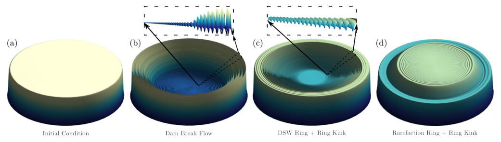
<figcaption class="paper-figure-caption"><b>Fig 1.</b> FIG. 1. Illustration of the distinct dynamically generated nonlinear wave patterns emanating from (a) a disk-shaped initial condition of uniform density, ρ0, in a binary 39K mixture within the interaction regime favoring droplet formation. Depending on the value of ρ0 three dynamical structures emerge. Namely, (b) dam break flows (DBFs) composed of ring DBF wavetrains, (c) composite ring DSWs attached to a ring kink, and (d) radial rarefaction waves along with ring kink structures. The insets in panels (b), (c) represent magnified density cross-sections of the ensuing waveforms in the spatial regions marked by the dashed lines.</figcaption>
</figure>
<figure class="paper-figure-card">
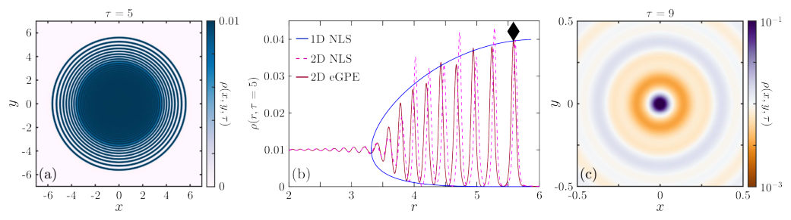
<figcaption class="paper-figure-caption"><b>Fig 2.</b> FIG. 2. Relative low background densities lead to the dynamical generation of ring DBFs in the 2D eGPE. (a) Characteristic density profile, ρ(x, y, τ), at τ = 5, within the 2D eGPE showcasing the nucleation of concentric rings following the dam break. (b) Corresponding 1D radial (with θ = 0) density profile, ρ(r, 0, τ = 5) in the 2D eGPE. The wave patterns are qualitatively described by the reduced 2D NLS model [Eq. (6)], see the legend. The envelopes of the 2D eGPE waveforms are adequately captured by the analytical expressions of the 1D NLS (see legend) pertaining to dispersive DBFs within Whitham modulation theory. The diamond marks the solitonic edge of the ring DBF. (c) At longer...</figcaption>
</figure>
<figure class="paper-figure-card">
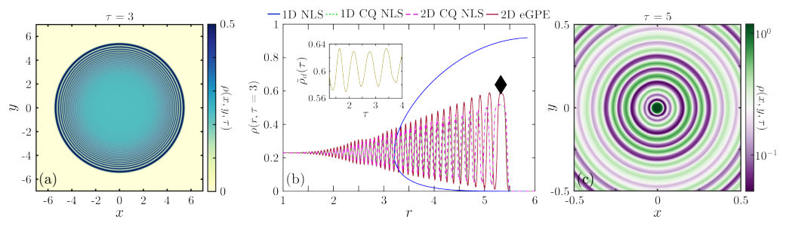
<figcaption class="paper-figure-caption"><b>Fig 3.</b> FIG. 3. (a) Prototypical density snapshot of ring DBFs at the upper limit of their parametric region of existence, i.e. at ρ0 = 0.23. (b) The radial (θ = 0) density at τ = 3 exemplifies that the nucleated ring DBFs are structurally different from their counterparts occurring at lower densities, see also Fig. 2. Their features, such as their envelopes cannot be captured by the 1D NLS model (see legend). Rather the shape of the ring DBFs is qualitatively described by the 2D and 1D CQ NLS reductions (see legend) of the 2D eGPE model [Eq. (8)]. However, the CQ NLS predicts smaller amplitudes of the ensuing rings which are also somewhat shifted to the left compared to the 2D eGPE outcome. The...</figcaption>
</figure>
<figure class="paper-figure-card">

<figcaption class="paper-figure-caption"><b>Fig 4.</b> FIG. 4. (a) Dependence of the soliton edge height, ρd, of the 2D eGPE ring DBFs on the background density, ρ0. When the latter is relatively small, ρd displays an approximately linear increasing trend which is close to the ρd = 4ρ0 analytical prediction stemming from the 1D NLS (see legend). For larger densities, the soliton edge height approaches the density of the 2D eGPE kink, i.e. 1/√e (dotted line). The maroon and navy-blue diamonds correspond to the solitonic edge of the 2D eGPE for ρ0 = 0.01 [Fig. 2(b)] and ρ0 = 0.23 [Fig. 3(b)], respectively. (b) The spreading rate, w, i.e. the difference between the linear and solitonic edge velocities, of the 2D eGPE ring DBFs closely follows the...</figcaption>
</figure>
<figure class="paper-figure-card">

<figcaption class="paper-figure-caption"><b>Fig 5.</b> FIG. 5. Dynamical generation of composite ring kink-DSW structures in the 2D eGPE, following the dam break initial condition [Eq. (4)]. (a) Characteristic density profile at τ = 3 stemming from the evolution of a uniform background with ρ0 = 0.4. (b) Comparison of the 1D radial (at θ = 0) density snapshot, ρ(r, τ), with the respective ones stemming from the reduced 1D and 2D CQ NLS models (see legend). This comparison highlights that the competition between the attractive and repulsive interaction terms is mainly responsible for the generation of such composite wave patterns. (c) The impingement of the ring structures around r = 0 leads to the nucleation of high-amplitude waves on top of a...</figcaption>
</figure>
</div>

<p><strong>Summary.</strong> This paper analyzes the complex nonlinear dynamics of radial dam break flows in 2D ultracold atomic droplets. By modeling the system with the extended Gross-Pitaevskii equation, the authors identify three distinct wave regimes—depending on initial density—that manifest as ring solitons, shock waves, or rarefaction waves. The findings are significant because these patterns are stabilized by the competition between attraction and repulsion inherent to the droplet environment.</p>
<p><strong>Why it may be interesting.</strong> This work directly addresses nonlinear wave dynamics in quantum many-body systems, providing concrete predictions for observable wave structures in ultracold atomic experiments that go beyond standard mean-field descriptions.</p>
<details>
<summary>Detailed structure</summary>
<p><strong>Main problem.</strong> The study investigates the controlled dynamical generation and characterization of radial dam break flows (DBFs) in two-dimensional droplet-bearing environments.</p>
<p><strong>Main result.</strong> Three distinct dynamical response regimes—ring DBF, composite ring DSW, and ring kink-rarefaction waves—are identified based on the initial density, demonstrating patterns prohibited in standard 2D Kerr media.</p>
<p><strong>Method.</strong> The analysis uses the extended Gross-Pitaevskii equation (eGPE) and its reduced forms, comparing results from 2D simulations, 1D cubic-quintic nonlinear Schrödinger (CQ NLS) models, and simple wave solutions.</p>
<p><strong>Model / system.</strong> The system models ultracold mixtures (e.g., $^{39}	ext{K}$) governed by the eGPE, which incorporates competing mean-field and quantum fluctuation effects via the Lee-Huang-Yang term. The dynamics are initialized on a disk-shaped uniform density.</p>
<p><strong>Key observables.</strong> Density ($
ho$), phase ($\phi$), and the formation of specific nonlinear wave patterns (ring DBF, kink-rarefaction waves).</p>
<p><strong>Important parameters / regimes.</strong> Initial density ($
ho_0$), which dictates the dynamical regime; the dispersion parameter ($\epsilon$).</p>
<p><strong>Assumptions / limitations.</strong> The dynamics are well-described by the 2D eGPE, and approximations are made by reducing the system to 1D or using the simple wave limit, which neglects certain curvature effects.</p>
<p><strong>Figures summary.</strong> Figures illustrate the three distinct nonlinear wave patterns: initial disk condition, ring DBF wavetrains, composite ring DSW attached to a ring kink, and radial rarefaction waves with ring kink structures.</p>
<p><strong>Paper structure.</strong> The paper progresses by establishing the governing eGPE, identifying the three density-dependent regimes, and then using reduced models (like the CQ NLS) and simple wave analysis to characterize the transitions between these complex nonlinear wave patterns.</p>
</details>
<details>
<summary>Abstract</summary>
<p>The controlled dynamical generation of radial dam break flows (DBFs) is demonstrated in two-dimensional droplet environments. These ultracold mixtures feature competing mean-field and quantum fluctuation effects and are initialized on a disk-shaped uniform density. Depending on the value of the latter, reflecting also the dominance of attractive or repulsive interactions, three dynamical response regimes are identified. At small densities a moving wavetrain of bright ring solitons is observed (dubbed ring DBF), at intermediate densities a ring kink-dispersive shock wave, while at large densities the flows encompass composite ring kink-rarefaction waves moving towards the center. The emergence of these patterns, whose formation would be prohibited in two-dimensional Kerr media due to wave-collapse, is rooted in the competition between attraction and repulsion inherent to droplet environments, modeled by the extended Gross-Pitaevskii equation. The characterization of the ensuing nonlinear waveforms is further corroborated by reduced models based on the cubic-quintic nonlinear Schrödinger equation. The different wave patterns emanating from dam break flows can be experimentally realized using current state-of-the-art ultracold atom experiments.</p>
</details>
<p><sub><a href="#top">↑ back to top</a></sub></p>

<p><a id="paper-2609.19798"></a></p>
<h3 id="variational-solution-of-non-hermitian-quantum-field-theory-in-two-dimensions"><a href="http://arxiv.org/abs/2609.19798v1">Variational Solution of Non-Hermitian Quantum Field Theory in Two Dimensions</a></h3>
<p><strong>Authors:</strong> Paul Romatschke<br>
<strong>Type:</strong> theory · <strong>Category:</strong> statistical mechanics · <strong>PDF:</strong> <a href="https://arxiv.org/pdf/2609.19798v1">https://arxiv.org/pdf/2609.19798v1</a><br>
<strong>Analysis basis:</strong> full PDF text, analyzed in chunks
<strong>Topic relevance:</strong> <code>Keldysh / 2PI / non-Gaussian methods</code> <strong>3/5</strong> · <code>methods for driven-dissipative</code> <strong>3/5</strong> · <code>analog quantum simulation</code> <strong>1/5</strong> · <code>correlated / nonlocal dissipation</code> <strong>1/5</strong> · <code>driven-dissipative phase transition</code> <strong>1/5</strong> · <code>non-equilibrium universality</code> <strong>1/5</strong> · <code>quantum measurements</code> <strong>1/5</strong></p>
<div class="figure-strip-hint">↔ Scroll figures horizontally</div>
<div class="paper-figures-scroll">
<figure class="paper-figure-card">

<figcaption class="paper-figure-caption"><b>Fig 1.</b> FIG. 1. Lowest-lying eigenvalue e0 of the Hamiltonian matrix Hnm truncated at n = K + 1 for</figcaption>
</figure>
<figure class="paper-figure-card">

<figcaption class="paper-figure-caption"><b>Fig 2.</b> FIG. 2. Energy levels of the negative coupling Hamiltonian (1) with m2 B ̸= 0 calculated using</figcaption>
</figure>
<figure class="paper-figure-card">

<figcaption class="paper-figure-caption"><b>Fig 3.</b> FIG. 3. Free energy of negative coupling QFT on a lattice with D = 3 transverse sites and</figcaption>
</figure>
<figure class="paper-figure-card">

<figcaption class="paper-figure-caption"><b>Fig 4.</b> FIG. 4. Low-lying eigenvalues Hamiltonian eigenvalues e(K) n in the variational method truncated</figcaption>
</figure>
<figure class="paper-figure-card">

<figcaption class="paper-figure-caption"><b>Fig 5.</b> FIG. 5. Field expectation value ⟨ϕ⟩for negative coupling ϕ4 theory. See text for details.</figcaption>
</figure>
</div>

<p><strong>Summary.</strong> This work details the application of a specialized variational method to solve non-Hermitian quantum field theories, particularly those with negative coupling. It successfully analyzes the $\phi^4$ theory on a lattice in two dimensions, providing quantitative results for the energy spectrum. The paper is significant for developing robust theoretical tools for complex, non-Hermitian quantum systems.</p>
<p><strong>Why it may be interesting.</strong> The extension of variational principles to non-Hermitian Hamiltonians is crucial for studying open quantum systems or systems exhibiting gain/loss, which is a key area of modern AMO physics and open quantum systems theory.</p>
<details>
<summary>Detailed structure</summary>
<p><strong>Main problem.</strong> The paper develops and applies a variational technique to solve non-Hermitian quantum field theories, specifically focusing on the challenging case of negative coupling quartic self-interaction.</p>
<p><strong>Main result.</strong> The variational method successfully calculates the ground state energy for the negative-coupling $\phi^4$ theory in $d=2$ lattice dimensions, showing convergence and agreement with other theoretical approaches.</p>
<p><strong>Method.</strong> The core method is a variational approach adapted for non-Hermitian Hamiltonians, involving constructing matrix elements using a finite basis set and minimizing the energy expectation value.</p>
<p><strong>Model / system.</strong> The primary model is the scalar $\phi^4$ quantum field theory in two Euclidean dimensions, regularized on a lattice, characterized by a negative coupling constant ($g<0$). The underlying physics involves non-Hermitian quantum mechanics, often related to PT-symmetric systems.</p>
<p><strong>Key observables.</strong> Ground state energy ($e_0$), first excited state energy ($e_1$), correlation length ($C_L$), and the field expectation value ($\langle\phi
angle$).</p>
<p><strong>Important parameters / regimes.</strong> The negative coupling constant ($g$), the mass squared ($m_B$), and the variational parameter ($\omega$ or $w$).</p>
<p><strong>Assumptions / limitations.</strong> The method assumes the existence of a purely real energy eigenspectrum for the variational results to be physically meaningful, which limits applicability at large volumes.</p>
<p><strong>Figures summary.</strong> Figures compare the calculated low-lying eigenvalues ($e_n$) against exact diagonalization results for the negative coupling Hamiltonian, and show the dependence of energy on the variational parameter $\omega$.</p>
<p><strong>Paper structure.</strong> The paper first introduces the variational technique for non-Hermitian systems, applies it to the wrong-sign quartic oscillator, and then extends the methodology to analyze the lattice discretization of the $\phi^4$ theory in $d=2$, comparing results against saddle-point expansions.</p>
</details>
<details>
<summary>Abstract</summary>
<p>This work describes a variational technique to solve non-Hermitian quantum systems, in particular those with negative coupling quartic self-interaction. Differences of applying variational methods from standard quantum mechanics to non-Hermitian quantum mechanics -- including potential pitfalls -- are highlighted. A successful implementation of the variational approach for the non-Hermitian case is presented. The technique is used to analyze scalar quantum field theory in d=2 with negative quartic self-interaction in the Hamiltonian formulation in lattice discretization.</p>
</details>
<p><sub><a href="#top">↑ back to top</a></sub></p>

<p><a id="paper-2609.20573"></a></p>
<h3 id="ft-weave-real-time-compilation-framework-for-reconfigurable-fault-tolerant-quantum-architectures"><a href="http://arxiv.org/abs/2609.20573v1">FT-Weave: Real-Time Compilation Framework for Reconfigurable Fault-Tolerant Quantum Architectures</a></h3>
<p><strong>Authors:</strong> Wan-Hsuan Lin, Milan Kornjača, Chen Zhao, Sheng-Tao Wang, Jason Cong<br>
<strong>Type:</strong> theory · <strong>Category:</strong> quantum information and computing · <strong>PDF:</strong> <a href="https://arxiv.org/pdf/2609.20573v1">https://arxiv.org/pdf/2609.20573v1</a><br>
<strong>Analysis basis:</strong> full PDF text, analyzed in chunks
<strong>Topic relevance:</strong> <code>Rydberg arrays</code> <strong>3/5</strong> · <code>analog quantum simulation</code> <strong>3/5</strong> · <code>QC/QI experiment</code> <strong>2/5</strong> · <code>methods for driven-dissipative</code> <strong>1/5</strong> · <code>quantum measurements</code> <strong>1/5</strong></p>
<div class="figure-strip-hint">↔ Scroll figures horizontally</div>
<div class="paper-figures-scroll">
<figure class="paper-figure-card">

<figcaption class="paper-figure-caption"><b>Fig 1.</b> FIG. 1. Three interdependent capabilities for efficient fault-tolerant quantum computing (FTQC) execution. (Top) High parallelism overlaps resource preparation, routing, and logical execution, whereas stage serialization leaves hard- ware underutilized. (Bottom left) Reconfigurability adapts qubit layouts and control regions to changing computation and communication demands. (Bottom right) Real-time control responds to stochastic preparation and teleportation outcomes by updating resource assignment, routing, and correction handling. Because a bottleneck in any one capability can limit the others, reconfigurability, real-time control, and high parallelism must be optimized jointly,...</figcaption>
</figure>
<figure class="paper-figure-card">

<figcaption class="paper-figure-caption"><b>Fig 2.</b> FIG. 2. Overview of the FT-Weave compilation frame- work. FT-Weave partitions compilation into four static and three dynamic steps. The static phase performs (1) logical cir- cuit scheduling, which groups logical operations into Clifford and non-Clifford layers; (2) microarchitecture design, which determines the organization of data blocks, routing space, and factory resources; (3) static routing, which determines communication paths known before execution; and (4) initial factory assignment, which associates upcoming non-Clifford operations with candidate factory outputs. In the running example, the scheduled circuit contains both Clifford and non- Clifford layers, and the high resource...</figcaption>
</figure>
<figure class="paper-figure-card">

<figcaption class="paper-figure-caption"><b>Fig 3.</b> FIG. 3. Execution abstraction for EFTQC ar- chitectures. Both the STAR and T-state cultivation ar- chitectures use probabilistic resource preparation followed by teleportation-based consumption. In STAR (top), the transversal multi-rotation (TMR) protocol prepares an angle- dependent resource state on a logical patch. In the execution model used here, each TMR attempt takes six QEC cycles. After preparation, RUS teleportation consumes the resource state, and an unsuccessful teleportation requires the prepa- ration of a corrective state with a different angle, creating runtime-dependent resource demand. In T-state cultivation (bottom), the check stage uses a small footprint and takes 12.5...</figcaption>
</figure>
<figure class="paper-figure-card">

<figcaption class="paper-figure-caption"><b>Fig 4.</b> FIG. 4. Overview of the compilation techniques. From left to right, the figure summarizes techniques for resource preparation and correction handling, resource assignment, routing, and execution policy. Dynamic angle collection distributes the available factory budget across current rotation requests and speculative RUS correction angles. Check-stage factory re- distribution reassigns successful intermediate patches to available escape factories, improving resource utilization and reducing the effective discard rate. Routing-aware assignment matches angle-demand slots to factories before preparation and prepared resource states to compatible logical-qubit requests after preparation while...</figcaption>
</figure>
<figure class="paper-figure-card">

<figcaption class="paper-figure-caption"><b>Fig 5.</b> FIG. 5. Example of FT-Weave timeline output for three compilation strategies applied on STAR benchmark The same workload—a layer of identical-angle RZ rotations on 25 logical qubits executed using 25 factories and one AOD—is compiled using three strategies: an unoptimized baseline (top), routing-aware assignment and movement optimization (middle), and the same optimizations with resource rematerialization (bottom). Each row tracks the activity of one factory over QEC cycles; colors denote TMR preparation, CNOT gates, forward movement, and return movement, as indicated in the legend. The shaded regions identify the first and fifth RUS rounds and a resource-rematerialization decision examined...</figcaption>
</figure>
</div>

<p><strong>Summary.</strong> This paper presents FT-Weave, a novel, real-time compilation framework designed to manage the complex resource dependencies in Fault-Tolerant Quantum Computing. By jointly coordinating resource preparation, assignment, routing, and error correction dynamically, it overcomes the limitations of static scheduling. The framework demonstrates significant speedups on neutral-atom architectures, proving that effective runtime coordination, rather than just maximizing parallelism, dictates overall computational throughput.</p>
<p><strong>Why it may be interesting.</strong> It provides a concrete, actionable blueprint for solving the complex, real-time resource orchestration problem inherent in scaling up quantum computation on physical platforms like neutral atoms.</p>
<details>
<summary>Detailed structure</summary>
<p><strong>Main problem.</strong> Efficient Fault-Tolerant Quantum Computing (FTQC) requires coordinating resource preparation, assignment, routing, and logical execution in real-time, which is difficult with static, offline scheduling methods.</p>
<p><strong>Main result.</strong> The proposed framework, FT-Weave, achieves up to a 3X speedup over baseline methods for simulating the 2D transverse-field Ising model by optimizing runtime coordination.</p>
<p><strong>Method.</strong> The authors introduce FT-Weave, a stage-aware, real-time compilation framework that jointly coordinates four stages: resource preparation, assignment, routing, and correction handling.</p>
<p><strong>Model / system.</strong> The framework is tested on two representative neutral-atom Early FTQC (EFTQC) architectures: the transversal STAR and a T-state cultivation architecture.</p>
<p><strong>Key observables.</strong> Application throughput, execution time, and speedup factor (up to 3X).</p>
<p><strong>Important parameters / regimes.</strong> Hardware and latency model constraints; the trade-off between exposed parallelism and effective runtime coordination.</p>
<p><strong>Assumptions / limitations.</strong> The performance evaluation is based on an evaluated hardware and latency model; the framework provides a blueprint adaptable to specific resource protocols.</p>
<p><strong>Figures summary.</strong> Figure 1 motivates the framework by showing the three interdependent capabilities (Parallelism, Reconfigurability, Real-Time Control). Figure 2 details the four recurring stages (preparation, assignment, routing, correction) partitioned into static and dynamic compilation phases.</p>
<p><strong>Paper structure.</strong> The paper introduces the problem of real-time FTQC orchestration, details the FT-Weave framework by partitioning compilation into static and dynamic phases, and validates its performance on specific neutral-atom architectures using the 2D TFIM simulation.</p>
</details>
<details>
<summary>Abstract</summary>
<p>Fault-tolerant quantum computing (FTQC) is essential for large-scale quantum computation, but realizing useful application throughput requires coordinating resource preparation, assignment, routing, and logical execution under strict hardware and timing constraints. Many FTQC compilation approaches construct offline schedules using nominal or fixed magic-state factory throughput. Such schedules cannot respond to stochastic resource-preparation and teleportation outcomes, leading to execution stalls and hardware underutilization. In this work, we introduce FT-Weave, a stage-aware real-time FTQC compilation framework that jointly coordinates resource preparation, resource assignment, teleportation routing, and correction handling. By adapting to runtime resource availability and hardware constraints, FT-Weave allows preparation, communication, and logical execution to overlap. We instantiate FT-Weave on two representative neutral-atom, early FTQC architectures: transversal STAR and a T-state cultivation architecture. Under the evaluated hardware and latency model, FT-Weave achieves a speedup of up to 3X over a baseline compilation flow for simulations of the two-dimensional transverse-field Ising model. In the case study, we further find that maximizing exposed concurrency does not necessarily minimize execution time. Although fine-grained asynchronous execution can reduce local idle time, its smaller optimization windows and increased routing contention can outweigh these gains. Together, these results show that effective runtime coordination, rather then exposed parallelism alone, determines how efficiently FTQC resources translate into application throughput:FT-Weave provides a blueprint for solving this real-time orchestration problem across resource protocols and architectures.</p>
</details>
<p><sub><a href="#top">↑ back to top</a></sub></p>

<p><a id="paper-2609.20559"></a></p>
<h3 id="high-order-correlations-and-ultrafast-wigner-negativities-in-bright-squeezed-vacuum-driven-high-harmonic-generation"><a href="http://arxiv.org/abs/2609.20559v1">High-order correlations and ultrafast Wigner negativities in bright-squeezed-vacuum-driven high-harmonic generation</a></h3>
<p><strong>Authors:</strong> Sebastián de-la-Peña, Heiko Appel, Marcelo F. Ciappina, Ofer Neufeld, Angel Rubio<br>
<strong>Type:</strong> theory · <strong>Category:</strong> other · <strong>PDF:</strong> <a href="https://arxiv.org/pdf/2609.20559v1">https://arxiv.org/pdf/2609.20559v1</a><br>
<strong>Analysis basis:</strong> full PDF text, analyzed in chunks
<strong>Topic relevance:</strong> <code>quantum measurements</code> <strong>3/5</strong> · <code>Keldysh / 2PI / non-Gaussian methods</code> <strong>2/5</strong> · <code>methods for driven-dissipative</code> <strong>2/5</strong> · <code>Full counting statistics</code> <strong>1/5</strong> · <code>interference shaping light</code> <strong>1/5</strong> · <code>quantum optics experiment</code> <strong>1/5</strong></p>
<div class="figure-strip-hint">↔ Scroll figures horizontally</div>
<div class="paper-figures-scroll">
<figure class="paper-figure-card">

<figcaption class="paper-figure-caption"><b>Fig 1.</b> FIG. 1. Schematic depiction of a diamond nano-vacancy center (modelled by a two-level system) driven by a bright-squeezed laser pulse, depicted as oscillations of electric field quadratures, and emitting higher harmonics.</figcaption>
</figure>
<figure class="paper-figure-card">

<figcaption class="paper-figure-caption"><b>Fig 2.</b> FIG. 2. Emission specturm S(ω) of a two-level system in and out of resonance (left and right panels, respectively) driven by coherent and squeezed vacuum (top and bottom panels respectively) for different Rabi intensities ΩR. The bottom panels are analog to those of [41].</figcaption>
</figure>
<figure class="paper-figure-card">

<figcaption class="paper-figure-caption"><b>Fig 3.</b> Figure 5 presents the quantum state of the driving mode through the Wigner distribution in the squeezed-interaction picture</figcaption>
</figure>
<figure class="paper-figure-card">

<figcaption class="paper-figure-caption"><b>Fig 4.</b> FIG. 3. Second-order photon correlation spectrum for the continuum of emission modes C(2)(ω, ω′).</figcaption>
</figure>
<figure class="paper-figure-card">

<figcaption class="paper-figure-caption"><b>Fig 5.</b> FIG. 4. Exemplary panels of the third-order photon correlation spectrum of the continuum of emission modes C(3)(ω1, ω2, ω3). The third frequency is fixed to the kth harmonic frequency, ω3 = kωL, while each panel shows the correlation spectrum as a function of the first and second frequencies, ω1 and ω2, in the vicinity of the ith and the jth harmonics.</figcaption>
</figure>
</div>

<p><strong>Summary.</strong> This theoretical study develops a fully quantum framework to model High-Harmonic Generation driven by bright-squeezed vacuum light. By solving the coupled quantum dynamics, the authors demonstrate that the nonclassical nature of the driving field leads to unique higher-order photon correlations and generates measurable, ultrafast Wigner-function negativities due to quantum back-action. This advances the understanding of nonlinear light-matter interactions in the quantum regime.</p>
<p><strong>Why it may be interesting.</strong> This work provides a rigorous, fully quantum framework for strong-field light-matter interactions, moving beyond semiclassical approximations to predict and interpret quantum signatures like photon correlations and Wigner negativity in attosecond dynamics.</p>
<details>
<summary>Detailed structure</summary>
<p><strong>Main problem.</strong> The paper addresses the challenge of fully quantum-mechanically describing High-Harmonic Generation (HHG) when driven by nonclassical, non-Gaussian light fields like bright-squeezed vacuum.</p>
<p><strong>Main result.</strong> Squeezed-vacuum driving yields distinct higher-order photon correlations compared to coherent driving, and the back-action from the emitter generates measurable, time-evolving Wigner-function negativities on attosecond timescales.</p>
<p><strong>Method.</strong> The authors solve the full quantum-electrodynamical dynamics of a two-level system coupled to quantized light modes in a multimode Hilbert space, utilizing a squeezed-picture transformation for convergence.</p>
<p><strong>Model / system.</strong> The model uses a two-level system (TLS) as a benchmark for strong-field light-matter interaction, driven by a bright-squeezed vacuum (BSV) field, and quantizes both the driving and emitted harmonic fields.</p>
<p><strong>Key observables.</strong> Second- and third-order photon correlations ($C^{(2)}, C^{(3)}$), Wigner function negativity volume ($V_{-}(t)$), and the full multimode quantum state.</p>
<p><strong>Important parameters / regimes.</strong> Squeezing parameter ($\xi$), Rabi frequency ($\Omega_R$), and the ratio of the energy gap to the driving frequency ($\Delta/\omega_L$).</p>
<p><strong>Assumptions / limitations.</strong> The analysis relies on the TLS approximation for the emitter and assumes that the continuum limit ($\Delta\omega 	o 0$) can be taken jointly with the infinite-photon limit ($|\xi| 	o \infty$) while keeping the physical driving strength finite.</p>
<p><strong>Figures summary.</strong> Figures compare emission spectra for coherent vs. BSV driving, show second-order correlation spectra, and illustrate the time evolution of the Wigner distribution and the negativity volume $V_{-}(t)$ over attosecond timescales.</p>
<p><strong>Paper structure.</strong> The paper establishes the fully quantum Hamiltonian, details the mathematical framework using the squeezed picture, calculates the correlation functions, and analyzes the time evolution of the quantum state's nonclassical features (Wigner negativity) due to back-action.</p>
</details>
<details>
<summary>Abstract</summary>
<p>High-harmonic generation (HHG) is a prototypical strong-field process in which intense light drives matter to emit radiation at integer multiples of the driving frequency. Extending HHG into the quantum-optical regime offers new opportunities to probe and control strongly nonlinear light-matter interactions using nonclassical states of light. Yet describing this regime requires a fully quantum treatment of the correlated electron-photon dynamics, which becomes computationally challenging for broadband, strongly squeezed fields. Here we solve the quantum-electrodynamical dynamics of a two-level system driven by bright squeezed vacuum in a converged multimode Hilbert space. Both the driving field and emitted harmonics are fully quantized, with the light-matter interaction treated nonperturbatively. This enables direct access to the multimode quantum state and its higher-order correlations beyond semiclassical sampling or perturbative descriptions. We show that squeezed-vacuum driving produces harmonic emission with qualitatively distinct second- and third-order photon correlations compared with coherent excitation. Moreover, back-action from the driven emitter strongly reshapes the incident squeezed field, generating pronounced Wigner-function negativities that evolve on attosecond timescales. Our results establish a fully quantum framework for broadband strong-field dynamics with squeezed light and provide a route to predicting and interpreting quantum-HHG experiments and their extension to more complex emitters.</p>
</details>
<p><sub><a href="#top">↑ back to top</a></sub></p>

<p><a id="paper-2609.20428"></a></p>
<h3 id="state-selective-floquet-memory-in-degenerate-manifolds"><a href="http://arxiv.org/abs/2609.20428v1">State-Selective Floquet Memory in Degenerate Manifolds</a></h3>
<p><strong>Authors:</strong> Ayan Sahoo, Argha Debnath, Debraj Rakshit<br>
<strong>Type:</strong> theory · <strong>Category:</strong> other · <strong>PDF:</strong> <a href="https://arxiv.org/pdf/2609.20428v1">https://arxiv.org/pdf/2609.20428v1</a><br>
<strong>Analysis basis:</strong> full PDF text, analyzed in chunks
<strong>Topic relevance:</strong> <code>analog quantum simulation</code> <strong>3/5</strong> · <code>driven-dissipative phase transition</code> <strong>2/5</strong> · <code>methods for driven-dissipative</code> <strong>2/5</strong> · <code>Keldysh / 2PI / non-Gaussian methods</code> <strong>1/5</strong> · <code>non-equilibrium universality</code> <strong>1/5</strong> · <code>scars &amp; prethermalization</code> <strong>1/5</strong></p>
<div class="figure-strip-hint">↔ Scroll figures horizontally</div>
<div class="paper-figures-scroll">
<figure class="paper-figure-card">

<figcaption class="paper-figure-caption"><b>Fig 1.</b> FIG. 1. shows the fidelity Fn as a function of time t for fixed param- eters λ = 0.01, ∆= 0.1, ω = 4, and ϵ = 0.02, corresponding to the initial state | ↑↑↑. . . ⟩for varied system sizes, L = 6 (red solid), L = 8 (maroon dash-dash), L = 10 (green dash-dot) and L = 12 (orange dash-dash-dot). Long-lived memory survies till threshold, t∗. The inset depicts the numerically extracted t∗(circles) as a func- tion of the system size, L, and the fitting (dotted line) from the finite size analysis suggests exponential growth of t∗, t∗∼e1.24L.</figcaption>
</figure>
<figure class="paper-figure-card">

<figcaption class="paper-figure-caption"><b>Fig 2.</b> FIG. 2. (a) Kintetic blockade in the λ-channel: The off-diagonal part of the weak-bond interaction, h2i,2i+1, flips the inner spins, when they are opposite, while leaving outer spins unchanged. Under any power of h2i,2i+1, |tutd⟩= | ↑↑↓↓⟩can connect to a configuration with flipped inner pair of spins, but can not rearrange to the con- figuration of its degenerate partner |tdtu⟩= | ↓↓↑↑⟩[Eq. 14]. (b) Selection rules of the ϵ-channel: The local kick gi generator couples only |+⟩and |0⟩. In contrast, it annihilates |−⟩and |s⟩exactly, mak- ing them dark to all orders in ϵ.</figcaption>
</figure>
<figure class="paper-figure-card">

<figcaption class="paper-figure-caption"><b>Fig 3.</b> FIG. 3. Stroboscopic fidelity Fn versus t = nτ (even n) at λ = 0.01, ∆= 0.1, ϵ = 0.02, ω = 3, L = 8, for two states of the one-triplon manifold: the localized triplon |tusss⟩(dotted) and the Bloch state |k⟩= 1 2 PN j=1 eikj|j, u⟩and the Bloch state |k⟩= 1</figcaption>
</figure>
<figure class="paper-figure-card">

<figcaption class="paper-figure-caption"><b>Fig 4.</b> FIG. 4. shows t∗as a function of ∆corresponding to λ = 0.01, ϵ = 0.02, and ω = 3 for L = 10 (circles), and 12 (square). Two prominent features can be noticed: off-resonant enhancement of life- time with system size and periodic collapse due to the Floquet reso- nance. The lines serve as guide to the eye.</figcaption>
</figure>
</div>

<p><strong>Summary.</strong> This theoretical paper determines the precise conditions required for quantum states to maintain coherence (memory) under periodic driving in a lattice model. It analyzes two sources of imperfection—structural coupling ($\lambda$) and driving kicks ($\epsilon$)—using degenerate perturbation theory. The key finding is that protection requires both kinetic blocking and avoiding specific resonance conditions, leading to a detailed understanding of state-selective memory loss.</p>
<p><strong>Why it may be interesting.</strong> This work provides concrete, quantitative criteria for designing quantum memories in periodically driven systems, which is highly relevant for quantum simulation and quantum information processing using engineered lattice dynamics.</p>
<details>
<summary>Detailed structure</summary>
<p><strong>Main problem.</strong> The paper investigates the conditions under which quantum states retain coherence or 'memory' when subjected to periodic driving, especially when the system deviates from ideal, perfectly invariant limits.</p>
<p><strong>Main result.</strong> State memory is protected only if the perturbations (both structural and driving imperfections) fail to connect the initial state to other degenerate partners, and the drive's local selection rules must avoid specific Floquet sideband resonances.</p>
<p><strong>Method.</strong> The analysis employs degenerate perturbation theory applied to the Floquet evolution operator, expanding the dynamics in terms of small coupling strengths ($\lambda$ and $\epsilon$) to analyze stability in projected subspaces.</p>
<p><strong>Model / system.</strong> The model is a periodically driven, clean, short-ranged alternating XXZ chain. The dynamics are analyzed by projecting the Hamiltonian onto near-degenerate manifolds defined by conserved quantities like dimer parity.</p>
<p><strong>Key observables.</strong> Fidelity ($F_n$) over stroboscopic time steps, which measures memory retention; the lifetime ($t^*$) of the state.</p>
<p><strong>Important parameters / regimes.</strong> Coupling strengths ($\lambda$ and $\epsilon$), the detuning ($\Delta$), and the ratio of energy gaps to driving frequencies ($\omega$).</p>
<p><strong>Assumptions / limitations.</strong> The analysis relies on a first-order expansion in the perturbation strengths ($\lambda$ and $\epsilon$), and assumes the existence of true-energy-degenerate blocks for the projection procedure.</p>
<p><strong>Figures summary.</strong> Figures illustrate the decay of fidelity ($F_n$ vs time) for different states, showing that lifetimes vary significantly even for states in the same manifold. Another figure maps the lifetime ($t^*$) as a function of detuning ($\Delta$), revealing collapse at resonance points.</p>
<p><strong>Paper structure.</strong> The paper systematically analyzes the stability by decomposing the perturbation into two channels: the $\lambda$-channel (structural/weak bonds) and the $\epsilon$-channel (driving imperfection/kick). It establishes criteria for protection in each channel, culminating in a comparison of state lifetimes based on these criteria.</p>
</details>
<details>
<summary>Abstract</summary>
<p>In order to understand which initial states retain memory under periodic driving, it is necessary to depart from the ideal limit giving rise to invariant structures and work inside near-degenerate manifolds. We show that degeneracy itself is not conclusive and what actually matters is how perturbations, such as structural and driving imperfections, acts on the projected multiplet. For systems decoupling into the local clusters in the ideal limit, the projections can be computed within degenerate perturbation theory. There the stability is decided by two criteria: the coupling can not connect the state with other degenerate partners in the manifold, either by kinetic blocking, or more generally, by diagonalizing the projected coupling, and the drive's local selection rule must admit only transfer energies detuned from Floquet sidebands, in which case the projected drive generator exactly vanishes. We formalize these understandings in a periodically driven clean, short-ranged alternating XXZ chain and demonstrate a set of results that include, long-lived states, both of product form and entangled across the clusters, a periodic family of sideband resonances, and an explicit example showing opposite fates for states with identical energy and charges.</p>
</details>
<p><sub><a href="#top">↑ back to top</a></sub></p>

<p><a id="paper-2609.19625"></a></p>
<h3 id="experimental-certification-of-the-nonlocal-advantages-of-quantum-imaginarity"><a href="http://arxiv.org/abs/2609.19625v1">Experimental certification of the nonlocal advantages of quantum imaginarity</a></h3>
<p><strong>Authors:</strong> Jian-Hao Wu, Kai-Yu Yuan, Yun-Xiang Tian, Hao-Ran Tan, Yan-Xin Rong, Zhen Shang, Yong-Jian Gu, Ya Xiao<br>
<strong>Type:</strong> experiment · <strong>Category:</strong> quantum information and computing · <strong>PDF:</strong> <a href="https://arxiv.org/pdf/2609.19625v1">https://arxiv.org/pdf/2609.19625v1</a><br>
<strong>Analysis basis:</strong> full PDF text, analyzed in chunks
<strong>Topic relevance:</strong> <code>QC/QI experiment</code> <strong>3/5</strong> · <code>quantum optics experiment</code> <strong>3/5</strong> · <code>quantum measurements</code> <strong>2/5</strong></p>
<div class="figure-strip-hint">↔ Scroll figures horizontally</div>
<div class="paper-figures-scroll">
<figure class="paper-figure-card">

<figcaption class="paper-figure-caption"><b>Fig 1.</b> FIG. 1. Illustration of the Bell nonlocality, NAQC, and NAQI sce- narios. (a) Bell nonlocality scenario. Alice and Bob share a bipartite quantum state ρAB. Without communication, Alice and Bob choose observables from {A1,A2} and {B1,B2}, respectively. After all the measurements, they calculate the correlation function, Bell nonlo- cality is certified if and only if the Ineq. (1) is violated. (b) NAQC scenario. The procedure consists of the following steps: (1) Alice and Bob share a bipartite quantum state ρAB. (2) Alice measures one of three Pauli observables chosen from σj ( j = x,y,z). (3) Alice communicates her chosen setting j and the corresponding outcome a to Bob via a classical...</figcaption>
</figure>
<figure class="paper-figure-card">

<figcaption class="paper-figure-caption"><b>Fig 2.</b> FIG. 2. Simplified flowchart of hybrid GA-SQP algorithm. GA involves five procedures: initialization, evaluation, selection, crossover, and mutation. The last four steps repeat until either |xk −xk−1| &lt; ε1 or k = kmax is satisfied, where xk and xk−1 are the optimal solutions at the k-th and (k −1)-th iteration, kmax and ε1 are the predefined maximal number of iterations and the tolerance, re- spectively. Upon termination, the GA outputs the optimized solution xk as the initial guess for SQP. In the n-th iteration of SQP, a con- structed QP subproblem is solved to provide gradient information dn−1, and the solution is updated to xn = xn−1 +αn−1dn−1, in which αn−1 is chosen to ensure...</figcaption>
</figure>
<figure class="paper-figure-card">

<figcaption class="paper-figure-caption"><b>Fig 3.</b> FIG. 4. Experimental results verifying NAQI. (a) Bell-state mixtures ρB(p). (b) Werner states ρW(p). In both panels, the solid light red curves show the theoretical predictions of violation parameter ∆QI as a function of p, while red markers with error bars indicate exper- imental values. The blue bars represent the fidelity of the prepared states. Error bars, estimated from the Poisson statistics of two-photon coincidences, are on the order of 10−3.</figcaption>
</figure>
<figure class="paper-figure-card">

<figcaption class="paper-figure-caption"><b>Fig 4.</b> FIG. 5. Violation parameters ∆QI, ∆QC, and ∆BN as a function of the mixture parameter p. Lines and markers show theoretical and experimental values. Light yellow, light red, and grey regions denote states exhibiting: Bell nonlocality only; Bell nonlocality and NAQI without NAQC; and all three correlations, respectively.</figcaption>
</figure>
</div>

<p><strong>Summary.</strong> This paper experimentally certifies the nonlocal advantage of quantum imaginarity (NAQI) using polarization-encoded photonic qubits. The researchers developed a hybrid optimization algorithm to measure NAQI by violating a specific imaginarity inequality. The results not only confirm NAQI but also establish a hierarchy among different quantum nonclassicality resources: NAQC $\subset$ NAQI $\subset$ Bell nonlocality.</p>
<p><strong>Why it may be interesting.</strong> This work is highly relevant as it experimentally tests a novel quantum resource (imaginarity) and rigorously compares its operational boundaries against established resources like coherence and entanglement, pushing the boundaries of quantum foundations testing.</p>
<details>
<summary>Detailed structure</summary>
<p><strong>Main problem.</strong> The paper aims to experimentally study the nonlocal advantage of quantum imaginarity (NAQI) and compare it with nonlocal advantages of quantum coherence (NAQC) and Bell nonlocality.</p>
<p><strong>Main result.</strong> Clear violations of the $l_1$-norm of imaginarity inequality are observed, providing experimental certification of NAQI. Furthermore, for two-qubit Werner states, the relationship $    ext{NAQC} \subset   ext{NAQI} \subset   ext{Bell nonlocality}$ was established.</p>
<p><strong>Method.</strong> The study involves experimentally characterizing the imaginarity of conditional states after local measurements on photonic qubits, utilizing a hybrid optimization algorithm (GA-SQP) to find optimal measurement settings.</p>
<p><strong>Model / system.</strong> The physical system uses polarization-encoded photonic qubits to prepare two-qubit Bell-diagonal and Werner states. The analysis focuses on bipartite quantum states $
ho_{AB}$ shared between two parties, Alice and Bob.</p>
<p><strong>Key observables.</strong> The $l_1$-norm of imaginarity ($J_{l1}^{\Upsilon_k}(
ho)$), the $l_1$-norm of coherence ($C_{l1}^k$), and the violation of the CHSH inequality are the key observables used to certify the respective nonlocal advantages.</p>
<p><strong>Important parameters / regimes.</strong> The analysis involves varying parameters $p$ (for state mixtures) and optimizing over measurement settings parameterized by angular variables ($    heta_p, \varphi_p$).</p>
<p><strong>Assumptions / limitations.</strong> The primary assumption is the experimental feasibility of measuring the $l_1$-norm of imaginarity using photonic qubits. The optimization process relies on the effectiveness of the hybrid GA-SQP algorithm.</p>
<p><strong>Figures summary.</strong> Figure 1 illustrates the three scenarios (Bell nonlocality, NAQC, NAQI) using measurements on photonic qubits. Figure 3 details the experimental setup for characterizing these three nonclassicality measures.</p>
<p><strong>Paper structure.</strong> The paper first introduces the theoretical framework for NAQI, NAQC, and Bell nonlocality. It details the measurement protocols and the necessary optimization procedure using a hybrid GA-SQP algorithm. Finally, it presents the experimental results confirming the nonlocal advantage of imaginarity and comparing the resource regions.</p>
</details>
<details>
<summary>Abstract</summary>
<p>Quantum imaginarity is a distinct resource in quantum information theory, yet its nonlocal properties have not been fully explored. Here, we report an experimental study of the nonlocal advantage of quantum imaginarity (NAQI), in which local measurements on one subsystem can steer the average imaginarity of the conditional states of the other subsystem beyond the corresponding classical bound. The $l_1$-norm of imaginarity inequality is adopted as an experimentally accessible witness. A hybrid optimization algorithm that combines a genetic algorithm with sequential quadratic programming is developed to avoid local optima and accelerate the search for optimal measurement settings. Using polarization-encoded photonic qubits, we prepare two classes of two-qubit Bell-diagonal states and experimentally characterize the imaginarity of the conditional states following local measurements. Clear violations of the $l_1$-norm of imaginarity inequality are observed, providing an experimental certification of NAQI. We further investigate the relationship among NAQI, the nonlocal advantage of quantum coherence (NAQC), and Bell nonlocality based on their respective inequality criteria. For the two-qubit Werner states considered in this work, the regions of states that violate the respective criteria satisfy $\mathcal{D}_{\rm NAQC}\subset\mathcal{D}_{\rm NAQI}\subset\mathcal{D}_{\rm BN}$. Our work provides an experimental realization of NAQI and a comparison of different forms of quantum nonclassicality in a photonic platform.</p>
</details>
<p><sub><a href="#top">↑ back to top</a></sub></p>

<p><a id="paper-2609.19288"></a></p>
<h3 id="learning-induced-dynamical-transition-in-recurrent-neural-networks"><a href="http://arxiv.org/abs/2609.19288v1">Learning-Induced Dynamical Transition in Recurrent Neural Networks</a></h3>
<p><strong>Authors:</strong> Varun Vaidya<br>
<strong>Type:</strong> theory · <strong>Category:</strong> disordered systems and neural networks · <strong>PDF:</strong> <a href="https://arxiv.org/pdf/2609.19288v1">https://arxiv.org/pdf/2609.19288v1</a><br>
<strong>Analysis basis:</strong> full PDF text, analyzed in chunks
<strong>Topic relevance:</strong> <code>Keldysh / 2PI / non-Gaussian methods</code> <strong>3/5</strong> · <code>methods for driven-dissipative</code> <strong>2/5</strong> · <code>driven-dissipative phase transition</code> <strong>1/5</strong> · <code>non-equilibrium universality</code> <strong>1/5</strong> · <code>quantum measurements</code> <strong>1/5</strong></p>
<div class="figure-strip-hint">↔ Scroll figures horizontally</div>
<div class="paper-figures-scroll">
<figure class="paper-figure-card">

<figcaption class="paper-figure-caption"><b>Fig 1.</b> Figure 1: The deformation of the effective one dimensional potential as a function of the feedback parameter ˆy for g=1.3. Starting from the SCS picture in (a), increasing feedback with time deforms the potential to a narrower and shallower well with the simultaneous emergence of a non- zero plateau. At ˆy = 0.2, subplot (f), we see the collapse of the well signaling a qualitative change. Beyond this, the solution is frozen at the maxima of the potential and fast dynamics disappear.</figcaption>
</figure>
<figure class="paper-figure-card">

<figcaption class="paper-figure-caption"><b>Fig 2.</b> Figure 2: Evolution at early time t ≪1/α. (a) shows the fast decay of the SCS correlator C(0, τ). (b) shows the time evolution of the network output at early times dictated by this fast decay.</figcaption>
</figure>
<figure class="paper-figure-card">

<figcaption class="paper-figure-caption"><b>Fig 3.</b> Figure 3: Network output as a function of time for five representative realizations with different onset times. The dashed curve shows the DMFT prediction. The histogram in (f) shows the distribution of onset times over 33 realizations.</figcaption>
</figure>
<figure class="paper-figure-card">

<figcaption class="paper-figure-caption"><b>Fig 4.</b> Figure 4: Diagonal correlation C(t,t) for five representative realizations. The dashed curve shows the DMFT prediction.</figcaption>
</figure>
<figure class="paper-figure-card">

<figcaption class="paper-figure-caption"><b>Fig 5.</b> Figure 5: (a) Network output as a function of time for representative runs shifted by their onset times. Also shown is the critical time tcr as predicted by the DMFT (b) The Diagonal Correlation matrix C(t, t) as a function of time for the same representative runs shifted by their onset times.</figcaption>
</figure>
</div>

<p><strong>Summary.</strong> This work applies Dynamical Mean-Field Theory to model the non-equilibrium dynamics of learning in Recurrent Neural Networks. It shows that the slow, feedback-driven learning process drives the system through a critical transition, transforming chaotic dynamics into stable, task-specific behavior. The theory successfully predicts the time evolution of the network output by identifying a critical feedback strength and time scale.</p>
<p><strong>Why it may be interesting.</strong> The use of advanced statistical mechanics tools like DMFT to model non-equilibrium learning dynamics provides a powerful analogy for understanding how structured information processing can stabilize complex, initially chaotic physical systems.</p>
<details>
<summary>Detailed structure</summary>
<p><strong>Main problem.</strong> The paper investigates how the process of learning in Recurrent Neural Networks (RNNs) fundamentally alters their underlying dynamical behavior, causing a transition from initial chaotic activity to stable, task-specific dynamics.</p>
<p><strong>Main result.</strong> The transition is characterized by a bifurcation in the Dynamical Mean-Field Theory (DMFT) solution, which is predicted by tracking the evolution of the two-time correlation function during training.</p>
<p><strong>Method.</strong> The authors developed a non-equilibrium DMFT framework, utilizing path integrals and the large N limit to derive self-consistent equations for the network's correlation functions.</p>
<p><strong>Model / system.</strong> The model is an RNN whose dynamics are governed by coupled differential equations, incorporating recurrent connectivity and a slow, feedback-driven learning rule that updates the readout weights.</p>
<p><strong>Key observables.</strong> The two-time correlation function C(t, s), the average network output $\langle y(t) 
angle$, and the effective feedback strength.</p>
<p><strong>Important parameters / regimes.</strong> The analysis relies on separating timescales: the fast intrinsic dynamics ($    au_c$) versus the slow learning timescale ($1/\alpha$).</p>
<p><strong>Assumptions / limitations.</strong> The analysis assumes a slow learning rate ($\alpha \ll 1/	au_c$) and employs the large N limit for mathematical tractability.</p>
<p><strong>Figures summary.</strong> Figures illustrate the quantitative agreement between DMFT predictions and numerical simulations, showing the evolution of the network output and the structure of the two-time correlation function before and after the critical transition time $t_{cr}$.</p>
<p><strong>Paper structure.</strong> The paper builds the theory by defining the system dynamics and learning rules, then applies DMFT via path integrals to derive self-consistent equations for the correlators. It analyzes the time evolution across distinct regimes (early, intermediate, late) to pinpoint the critical transition point.</p>
</details>
<details>
<summary>Abstract</summary>
<p>Learning in recurrent neural networks can fundamentally reshape their underlying dynamics, transforming initially chaotic activity into stable task-dependent behavior. We develop a non-equilibrium dynamical mean-field theory(DMFT) to describe this transition during learning. We show that a slow feedback-driven learning process generates an evolving effective feedback strength that drives the network through a transition from chaotic to stable dynamics defined by a bifurcation of the DMFT solution. By deriving the two-time correlation function throughout learning, we identify a critical feedback strength and a corresponding learning rate dependent critical time separating these regimes. The transition arises from the progressive deformation of an effective dynamical landscape by the growing learned feedback structure. Starting from the untrained state, the theory predicts the time evolution of the network output during training and shows quantitative agreement with numerical simulations.</p>
</details>
<p><sub><a href="#top">↑ back to top</a></sub></p>
<hr>
<p>
<a href="index.html">← Index</a>
 · <a href="papers_01.html">← Previous</a> · <a href="papers_03.html">Next →</a>
</p>
<hr>

</body>
</html>
